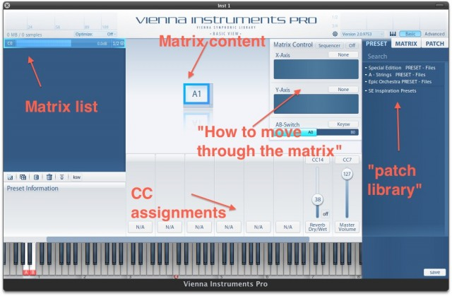
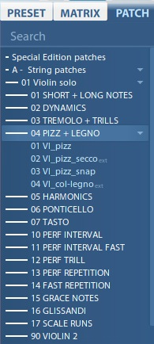

<?xml version="1.0" encoding="UTF-8"?><rss version="2.0"
	xmlns:content="http://purl.org/rss/1.0/modules/content/"
	xmlns:wfw="http://wellformedweb.org/CommentAPI/"
	xmlns:dc="http://purl.org/dc/elements/1.1/"
	xmlns:atom="http://www.w3.org/2005/Atom"
	xmlns:sy="http://purl.org/rss/1.0/modules/syndication/"
	xmlns:slash="http://purl.org/rss/1.0/modules/slash/"
	xmlns:itunes="http://www.itunes.com/dtds/podcast-1.0.dtd"
xmlns:rawvoice="http://www.rawvoice.com/rawvoiceRssModule/"
xmlns:googleplay="http://www.google.com/schemas/play-podcasts/1.0/play-podcasts.xsd"
>

<channel>
	<title>Gear &#8211; SCOREcastOnline.com</title>
	<atom:link href="." rel="self" type="application/rss+xml" />
	<link>http://www.scorecastonline.com</link>
	<description>Global Community for the Professional Media Composer</description>
	<lastBuildDate>Mon, 19 Jun 2017 08:43:18 +0000</lastBuildDate>
	<language>en-US</language>
	<sy:updatePeriod>hourly</sy:updatePeriod>
	<sy:updateFrequency>1</sy:updateFrequency>
	<generator>https://wordpress.org/?v=4.8</generator>
<!-- podcast_generator="Blubrry PowerPress/7.0.4 beta" mode="advanced" feedslug="feed" -->
	<itunes:summary>Global Community for the Professional Media Composer</itunes:summary>
	<itunes:author>Gear &#8211; SCOREcastOnline.com</itunes:author>
	<itunes:image href="../../../../wp-content/plugins/powerpress/itunes_default.jpg" />
	<itunes:subtitle>Global Community for the Professional Media Composer</itunes:subtitle>
	<image>
		<title>Gear &#8211; SCOREcastOnline.com</title>
		<url>../../../../wp-content/uploads/powerpress/sig-SCO.jpg</url>
		<link>../</link>
	</image>
<site xmlns="com-wordpress:feed-additions:1">29563098</site>	<item>
		<title>Smaller Kontakt Library Developers</title>
		<link>../../../../2012/11/22/smaller-kontakt-library-developers/</link>
		<comments>../../../../2012/11/22/smaller-kontakt-library-developers/#comments</comments>
		<pubDate>Thu, 22 Nov 2012 22:37:22 +0000</pubDate>
		<dc:creator><![CDATA[Matt Bowdler]]></dc:creator>
				<category><![CDATA[Gear]]></category>
		<category><![CDATA[gear]]></category>

		<guid isPermaLink="false">../../../../?p=1901</guid>
		<description><![CDATA[We all know the big names of sample libraries development. But what about the less-known ones? Matt Bowdler explores a number of gems you can find without having to re-mortgage the house or break the bank...]]></description>
				<content:encoded><![CDATA[<p><span style="font-family: Cambria,serif;">As composers we are compelled to obsess about sample libraries. It&#8217;s like an illness. We hover around forums, when we should be writing music, seeing what our favourite developers are up to, when they&#8217;re going to release their latest mega-library and how we can possibly scrape a few pounds off the recommended retail price via discount codes and promo sales.</span></p>
<p><span style="font-family: Cambria,serif;">Soon it will be <a title="Black Friday" href="http://en.wikipedia.org/wiki/Black_Friday_%28shopping%29" target="_blank">Black Friday</a> and we are all sat, hitting refresh, waiting for our favourite sound manglers to reveal how big their sale is, hoping the expensive stuff we can&#8217;t really justify buying may be in an utterly implausible 99% off sale.</span></p>
<p><span style="font-family: Cambria,serif;">But, there is another way. A way that doesn&#8217;t involve crying, praying and gnawing our finger nails down to the elbow. And that way is buying less expensive libraries from smaller developers.</span></p>
<p><span style="font-family: Cambria,serif;">We are all familiar with the big-hitters such as <a title="Cinesamples" href="http://cinesamples.com/" target="_blank">Cinesamples</a>, <a title="8dio" href="http://8dio.com/" target="_blank">8dio</a>, and <a title="Spitfire Audio" href="http://www.spitfireaudio.com/" target="_blank">Spitfire Audio</a>. We are all fairly familiar with slightly smaller companies like <a title="SonicCouture" href="http://www.soniccouture.com/en/" target="_blank">SonicCouture</a>, <a title="Sonokinetic" href="http://www.sonokinetic.net/" target="_blank">Sonokinetic</a> and <a title="Impact Soundworks" href="http://impactsoundworks.com/" target="_blank">Impact Soundworks</a>. But there are many new companies out there making little specialised libraries that are amazingly cost effective and not lacking in competitive quality.</span></p>
<p><span style="font-family: Cambria,serif;"><a title="Embertone" href="http://www.embertone.com/" target="_blank"><strong>Embertone</strong></a><br />
I&#8217;m starting with Embertone as they are steadily moving into the realms of the well-known, through their combination of amazing legato scripting and cheap pricing policy. Their Chapman Trumpet, Jubal Flute and now Shire Whistle are slowly finding a place in everybody&#8217;s studio. And the promise of an upcoming solo violin library is hugely exciting news. If you haven&#8217;t already visited their website, make sure you go there credit card in hand!</span></p>
<p><span style="font-family: Cambria,serif;"><a title="Cinematique Instruments" href="http://www.cinematique-instruments.com/" target="_blank"><strong>Cinematique Instruments</strong></a><br />
If &#8216;eclectic&#8217; is what you&#8217;re after, this outfit are well worth a visit. Their unique collection ranges from obscure European string instruments (such as the Bowed Psaltery or German Monochord), through to electronic percussion of their Cement and Experimental Box series, via mallets, harmonicas and pianos. When you&#8217;re looking for a unique sound to add a little nuance to your work, you&#8217;ll find something here.</span></p>
<p style="text-align: center;"><a href="../../../../2012/11/22/smaller-kontakt-library-developers/ci-german-monochord" rel="attachment wp-att-1904"></a></p>
<p style="text-align: center;">Cinematique Instruments&#8217; German Monochord</p>
<p><span style="font-family: Cambria,serif;"><a title="FocuSounds" href="http://www.focusounds.com/" target="_blank"><strong>FocuSounds</strong></a><br />
A brand new developer that has just arrived on the scene quite bravely with that obsession of all composers, solo strings. Their Sweet Cello and Sweet Violin aim to provide an affordable alternative to some of the bigger libraries, without any compromise on quality. If the demos are anything to go by, they appear to have done just that. And for those of us who want to put together string quartets, it&#8217;s always good to have another solo cello or violin.</span></p>
<p><span style="font-family: Cambria,serif;"><a title="Precisionsound" href="http://www.store.precisionsound.net/" target="_blank"><strong>Precisionsound</strong></a><br />
These Swedish developers offer a little bit of everything. Accordions, music toys, flutes, pianos, zithers, organs, synth textures and trailer tools await the happy shopper. My particular favourites are their European folk instruments. They have the finest kantele and cimbalom I know of. If you have a taste for non-orchestral instruments, you are bound to find something.</span></p>
<p><span style="font-family: Cambria,serif;"><a title="Pendle Poucher" href="http://dulcitone1884.virb.com/" target="_blank"><strong>Pendle Poucher</strong></a><br />
This curiously titled UK-based composer has only a few instruments, but they are unique to his site. Dulcitones are hard to come by, but here you will find two! They are exquisitely sampled, as is his Autoharp and Ship&#8217;s Piano. The true extraordinary gem in this collection is the Pendleonium, an original instrument put together by Pendle Poucher from a balalaika, a viola, a baritone guitar, a Roland chorus echo, Roger Linn amp and Vermona sing reverb. Madness, pure madness.</span></p>
<p><span style="font-family: Cambria,serif;"><a title="AudioThing" href="http://www.audiothing.net/" target="_blank"><strong>AudioThing</strong></a><br />
More singular instruments from Europe. Italian sample developers AudioThing have an obsession with providing sounds you just won&#8217;t find anywhere else. I first became aware of them from their Pong Glockenspiel library, the <em>definitive</em> &#8216;glockenspiel being played by dropping ping pong balls on it&#8217; library. On their site you will find instruments made from spray cans, toy harps and, most recently, a place called the Temple of Mercury in Naples – which really does need to be read about in more depth to be understood, but is a thing of strange beauty.</span></p>
<p style="text-align: center;"><a href="../../../../2012/11/22/smaller-kontakt-library-developers/temple-of-mercury-04" rel="attachment wp-att-1905"></a></p>
<p style="text-align: center;">AudioThing&#8217;s Temple of Mercury</p>
<p><span style="font-family: Cambria,serif;"><strong><a title="Synth Magic" href="http://www.synthmagic.co.uk/" target="_blank">Synth Magic</a> and <a title="Hollow Sun" href="http://www.hollowsun.com/" target="_blank">Hollow Sun</a></strong><br />
Finally, last but by no means least, not all Kontakt libraries are devoted to instruments – be they orchestral, ethnic or just plain mad. Synthesizers also get a look-in and both Synth Magic and Hollow Sun are the finest purveyors of such rare synth classics as you can imagine.</span></p>
<p><span style="font-family: Cambria,serif;">Synth Magic&#8217;s roster includes the Jen SX3000, the Korg Delta, the ARP Quadra and the rather sublime but rare Farfisa Polychrome. Hollow Sun provide a beautifully detailed Crumar Performer, Moog Taurus and a Hammond Novachord. Plus they also make some strange synth instruments of their own that hark back to the days of valve relics and dusty oscillators in their Music Laboratory Machines catalogue.</span></p>
<p><span style="font-family: Cambria,serif;">So, there you go. You&#8217;ve no excuse to whine about not being able to afford new libraries any more. There&#8217;s a world of Kontakt (other sample players are available) joy to be had for a handful of shiny pennies, and it&#8217;s a world that will result in your music being that little bit different from your compadres and competitors. And don&#8217;t forget the heart-warming glow of knowing you&#8217;ve helped one of the little guys out.</span></p>
<p><span style="font-family: Cambria,serif;">If you have any favourite little developers out there, why not share them in the comments below? We all like a bargain.</span></p>
]]></content:encoded>
			<wfw:commentRss>../../../../2012/11/22/smaller-kontakt-library-developers/feed/</wfw:commentRss>
		<slash:comments>17</slash:comments>
	<post-id xmlns="com-wordpress:feed-additions:1">1901</post-id>	</item>
		<item>
		<title>CineBrass Core and Pro – A Retrospective</title>
		<link>../../../../2012/09/12/cinebrass-core-and-pro-a-retrospective/</link>
		<comments>../../../../2012/09/12/cinebrass-core-and-pro-a-retrospective/#comments</comments>
		<pubDate>Wed, 12 Sep 2012 15:00:00 +0000</pubDate>
		<dc:creator><![CDATA[Guy Rowland]]></dc:creator>
				<category><![CDATA[Gear]]></category>
		<category><![CDATA[gear]]></category>

		<guid isPermaLink="false">../../../../?p=1619</guid>
		<description><![CDATA[With Cinebrass Core and Pro, Cinesamples introduced a well-thought out brass library to market, giving composers some much-needed ammunition for their daily work. SCOREcast's Guy Rowland look back at these two libraries and gives you the scoop about what they can do for you.]]></description>
				<content:encoded><![CDATA[<p style="text-align: center;"><a href="../../../../2012/09/12/cinebrass-core-and-pro-a-retrospective/cinebrass-boxes" rel="attachment wp-att-1623"><br />
</a></p>
<p>&nbsp;</p>
<p>By now most SCOREcast readers will be familiar with CineBrass. Like the recently released CineWinds, It was famously recorded at the prestigious Barbara Streisand Scoring Stage at Sony, home of a thousand blockbuster scores, and also for using union, named players. Initially the library was released with just 12 lean, mean, highly configurable patches as a result of a day&#8217;s recording session which covered the essentials, then a Pro expansion was released several months later. This second product was the result of 2 days sessions, and greatly expanded both the depth and range of instruments.</p>
<p><a href="../../../../2012/09/12/cinebrass-core-and-pro-a-retrospective/cinebrass-articulations-2" rel="attachment wp-att-1622"></a></p>
<p>CineBrass Core (the renamed original library) quickly established a reputation for a killer out of the box sound like no other commercial brass library. The right players in the right space with the right recording engineers gave that instant hit, from the plaintive solo horn to the euphoric trumpet ensemble, this was truly a “familiar” sound, in the best sense. Turns out that if you record some of John Williams&#8217; players in the space where Indiana Jones was actually recorded, you get Hollywood in a virtual box.</p>
<p>But the library was not without its problems. The solo instruments had only one velocity layer, and several crucial articulations were missing. Also a disappointment was that the legato performance was problematic. However nice the Sony ambiance is, users quickly complained that on faster passages, the build up of it turned a performance into a bit of a mush.</p>
<p>The two-pronged response from CineSamples was to simultaneously improve Core with a revision, and release Pro to fill in the gaps. The latter featured many more solo instruments with multiple velocity layers, mutes, a new 12 horn patch, stopped and fluttered horns and some chord patches. Meanwhile the 1.1 revision for Core also added new features like a very clever double and triple tonging script, layered shorts on sustain high velocities for more attack and drastically tweaked legato which enabled much faster playing. However, the latter came at a price&#8230; the mush may have gone, but in some cases so too did a lot of natural ambiance. The rejigged trumpet ensemble worked very well, but the 6 horn legato patch in particular only really worked on p / mf levels. Pushing up the modwheel, the transitions seemed to vanish completely and the ambiance was severely truncated. In that particular case, you could play faster, but it didn&#8217;t sound natural any more, even on slow passages.</p>
<p><iframe src="http://w.soundcloud.com/player/?url=http%3A%2F%2Fapi.soundcloud.com%2Fplaylists%2F2457269%3Fsecret_token%3Ds-Sxurj&amp;show_artwork=true&amp;secret_url=true" frameborder="no" scrolling="no" width="100%" height="450"></iframe></p>
<address>A Cmaj-scale played from p to f first on the original 1.0 patches, and then on the 1.1 revision. You can hear that the faster run downs sound cleaner on p and mf 1.1, but the legato on the 1.1 f layer is unconvincing.</address>
<address> </address>
<p>So the question is – CineBrass Pro may expand the range, but does it fill in ALL the gaps?</p>
<p><strong>Pro Legato</strong></p>
<p style="text-align: center;"><a href="../../../../2012/09/12/cinebrass-core-and-pro-a-retrospective/cinebrass-pro-solo-legato" rel="attachment wp-att-1627"></a></p>
<p style="text-align: left;">In general, Pro is far more nimble to play than the original version of Core. They&#8217;ve clearly reigned in the ambiance on the interval samples to achieve that improved playability, but it avoids the more unpleasant side effects you occasionally hear in Core 1.1. It still isn&#8217;t as expansive as Core&#8217;s 1.0, but the trade off is that it makes it more versatile. And of course&#8230; you can always add more ambiance, but you can&#8217;t take away (well, unless you have Zynaptiq&#8217;s amazing new UNVEIL plugin&#8230;)</p>
<p>Core and Pro come with a sampled Bristacti M7 reverb, with the intent to keep resource use down. A great idea, and it sounds very nice on non-legato articulations, but doesn&#8217;t work on the legato patches, as it can&#8217;t ring out naturally – again, the scripting artificially truncates it, so you actually make the existing problem worse. So with Pro more than the original release of Core, this library needs a little help from a good additional reverb if you&#8217;re playing the legatos in particular. It feels like a bit of a shame that we&#8217;re not getting the full benefit of that Sony stage (or more specifically its tail) when using legato, but perhaps the guys have reached the limit that scripting can accomplish.</p>
<p><iframe src="http://w.soundcloud.com/player/?url=http%3A%2F%2Fapi.soundcloud.com%2Fplaylists%2F2457248%3Fsecret_token%3Ds-hZwY7&amp;show_artwork=true&amp;secret_url=true" frameborder="no" scrolling="no" width="100%" height="450"></iframe></p>
<address>These examples use the same basic fast Cmaj scale with cc1 dynamics. The first is the straight mix of the three mic positions, the second adds the sampled Bristacti, the final reverts just to the mix but adds a Waves Todd A-O scoring stage impulse response on the Kontakt output.</address>
<p>&nbsp;</p>
<p>The solution, therefore is to dial in your plugin or hardware unit of choice to add some tail onto the legato patches. In fact, CineSamples are soon to release an update to the CineBrass range which takes the user interface from the new CineWinds library, and this will have a built in convolution reverb based on their Bricasti settings &#8211; a clever touch. And with some non-sampled tail added to the legatos, the net effect is terrific. 12 horns is pretty formidable at the fff level, but it doesn&#8217;t sound ridiculous either – indeed the lowest velocities have a beautifully restrained tone. I find myself using it a lot with CC1 dialed low &#8211; just sounds sensational &#8211; and the interval samples are bang on. In the main it&#8217;s also a lot smoother than the original 6 horn patch, which felt quite uneven up and down the keyboard.</p>
<p style="text-align: center;"><a href="../../../../2012/09/12/cinebrass-core-and-pro-a-retrospective/cinebrass-core-legato" rel="attachment wp-att-1624"></a></p>
<p>The horns do still have one significant flaw, however. Apparently, due to issues CineSamples discovered when scripting and editing, the upper notes in the legato or articulation sustain patch can only sound fff if you&#8217;re playing a legato transition. It&#8217;s a strange thing – if you play the notes non-legato in the top half octave, you can&#8217;t get above an mp. This is a real shame, depending on the phrase, it can pretty dramatically sound like the brakes are applied. It&#8217;s a slight irony after the problems with the original 6 horn legato that they got the new legatos spot on, but some of the basic sustains don&#8217;t match!</p>
<p><iframe src="http://w.soundcloud.com/player/?url=http%3A%2F%2Fapi.soundcloud.com%2Fplaylists%2F2457273%3Fsecret_token%3Ds-ENjkM&amp;show_artwork=true&amp;secret_url=true" frameborder="no" scrolling="no" width="100%" height="450"></iframe></p>
<address>The fff legato now copes very well with the fast scale, however the fff sustains suffer in the top half octave. The fifths with dynamics demonstrate the smoothness of the dynamics and legato transitions – much, much better than Core!</address>
<address> </address>
<p>The rest of the library expands the range almost as much as you&#8217;d hope, fitting in indistinguishably tone-wise with the original. You obviously have much more range with the solo instruments, and the tuba is exceptionally good, really playable. Needless to say, the versatility is greatly increased with the Pro solo sections, having added 3 velocity layers. However, the original trumpet and horn are still indispensable for quieter emotive parts, there&#8217;s still something really special about them, so don&#8217;t be tempted to eject them from your template. There is one major omission still from the final combined line up – there is no trombone ensemble legato patch, which is a real shame, since the tone of the ensemble articulations in Core is absolutely superb.</p>
<p><a href="../../../../2012/09/12/cinebrass-core-and-pro-a-retrospective/cinebrass-articulations-3" rel="attachment wp-att-1625"></a></p>
<p>A real highlight of Pro turns out to be the orchestrated chords, an idea borrowed from CineSamples own CineOrch. The horns triads are especially good, with major and minor inversions (audio example), and a separate patch for 7th variations. The scripting on these patches is excellent, highly playable with CC1 control, there&#8217;s a palpable air of realism here with the correct voice leading. Well worth taking the time to get around the various configurations of chords on the keyboard.</p>
<p><iframe src="http://w.soundcloud.com/player/?url=http%3A%2F%2Fapi.soundcloud.com%2Ftracks%2F52584307%3Fsecret_token%3Ds-KveZc&amp;show_artwork=true&amp;secret_url=true" frameborder="no" scrolling="no" width="100%" height="166"></iframe></p>
<p>The library has attracted a little criticism in other areas. You have 3 lengths of short avaiable, and some find this too limiting, while others have pointed out that the dynamic range could be increased in terms of volume (as opposed to the number of velocity layers). A gentle p passage is still relatively loud – perhaps a future revision could add some additional level of dynamic control. I don&#8217;t find either of these limitations too much of a problem in practice, in the case of the latter, it&#8217;s just a case of riding the volume where needed.</p>
<p><strong>Verdict</strong></p>
<p>CineBrass is your classic flawed masterpiece. First and foremost – the tone is uniformly great. Specifically, in Core the original trumpet ensemble is utterly sublime, the low patches are terrific and the solo instruments absolutely nail the plaintive Saving Private Ryan feel. Pro gives you (mostly) killer horns, exquisite orchestrated chords, versatile solo instruments and a slew of effects. The conclusion regarding which one to buy is perhaps inevitable – most users really will need both. Indeed if you own the combo, exclusive bonus patches that make use of sample sets from both libraries are on their way. If you really can only have one, I&#8217;d pick Core.</p>
<p>Even both together doesn&#8217;t have the breadth of articulations of East West&#8217;s Hollywood Brass, but arguably more than makes up for it in other areas – both are Kontakt player libraries, recorded in pretty much the greatest brass space in Hollywood with the crème de la crème of players scoring today, outstandingly playable orchestrated chords and it&#8217;s easy on resources. It&#8217;s a real shame that for their latest release &#8211; CineWinds &#8211; the players&#8217; union, AFM, has decided not to continue their association with CineSamples.  It seems they got cold feet with regard to being associated with sampling &#8211; something which is perhaps worthy of a post of its own.  However, CineSamples assure us that they will continue to share the revenue from their products with the musicians and engineers, whether the product has an AFM badge or not.  And major kudos to them for doing so.</p>
]]></content:encoded>
			<wfw:commentRss>../../../../2012/09/12/cinebrass-core-and-pro-a-retrospective/feed/</wfw:commentRss>
		<slash:comments>3</slash:comments>
	<post-id xmlns="com-wordpress:feed-additions:1">1619</post-id>	</item>
		<item>
		<title>The Best in Free FX-Plugins</title>
		<link>../../../../2012/07/19/the-best-in-free-fx-plugins/</link>
		<comments>../../../../2012/07/19/the-best-in-free-fx-plugins/#comments</comments>
		<pubDate>Thu, 19 Jul 2012 13:00:20 +0000</pubDate>
		<dc:creator><![CDATA[Matt Bowdler]]></dc:creator>
				<category><![CDATA[Gear]]></category>
		<category><![CDATA[gear]]></category>

		<guid isPermaLink="false">../../../../?p=1654</guid>
		<description><![CDATA[Composer and sound-designer Matt Bowdler looks at some of the most promising free plugins that can make your productions sound top-notch without you having to break the bank!]]></description>
				<content:encoded><![CDATA[<p style="text-align: justify;">Though most of us enjoy the concept of something being free, the majority of the time there are two common reactions to ‘free’ things. The first type elicits the response “I’m not surprised it’s free, I wouldn’t pay for that rubbish.” The second type attracts suspicion: “Why is this free? What’s wrong with it? What do they really want?”</p>
<p style="text-align: justify;">Such derision and suspicion is not always warranted, and this is very much the case in the world of VST/AU effects. You may wonder why, after having spent four figures on compressors and EQs, you would worry about anything that is free. Surely it can’t equal that expensive, shiny stuff that’s just made your credit card buckle?</p>
<p style="text-align: justify;">Well, I think it can. I use a lot of free effects in my mixes and also when mastering – whether it be scoring or electronica. Many of the effects I’ve paid for (although I won’t name names) are often replaced by free alternatives. So, here are some of what I consider to be the best VST and AU effects out there right now, starting with the VST only ones.</p>
<h2 style="text-align: justify;"><strong>VST Only Effects</strong></h2>
<p style="text-align: justify;">It is the nature of the beast of developing freebies that they are more likely to be PC-based, simply because of the hardware overheads. Also, the market at that ‘price level’ contains far more PC users than Mac users.</p>
<p style="text-align: justify;">There’s only one place to start when it comes to quality free VST-only effects and that’s at <a href="http://www.varietyofsound.wordpress.com/">Variety of Sound</a>. Bootsie has been developing quality plug-ins for a few years now and has racked up a solid collection of excellent VST effects. Among the highlights is the new <strong>Density MkIII</strong>. This brand new incarnation of his mastering compressor is a wonderful piece of software. It’s predominantly designed to help glue all the elements of your mix together as a coherent whole, but has rather an impressive ability to do more than that. Applying to a mix adds punch and depth, a clarity that may have been missing. And whilst it doesn’t aim to emulate any classic gear, playing with the ‘color’ feature adds some nice vintage saturation – although be careful how far you dial it up. I highly recommend the ‘summing’ and ‘non-lin amp’ presets as starting points to discovering what this can do.</p>
<p style="text-align: justify;">Other highlights in the Bootsie/Variety of Sound range include <strong>BootEQ MkII</strong>, <strong>Thrillseeker LA </strong>and <strong>Ferric TDS</strong>. BootEQ MkII provides two modules: the main EQ and also a preamp, allowing you to accurately mould some frequencies whilst also adding a little vintage warmth. Thrillseeker LA is a stereo leveling amplifier/compressor with a subtle character that I highly recommend for use on misbehaving vocals. Ferric TDS is, as you may have guessed from the name, a tape saturation effect. Everyone likes that feel of tape saturation on their tracks and here, via four very simple knobs (recovery, dynamics, saturation and limiter), you can dial in anything from gentle warmth up to track-chomping distortion.</p>
<p style="text-align: justify;">As well as sounding fantastic, Bootsie’s effects have a habit of looking stunning too – the GUI’s being beautiful and simple to navigate. It is worth mentioning, however, that they are only 32-bit at this stage. Anyway, enough fanboi gushing, there are many more freebie treats out there.</p>
<p style="text-align: justify;">An all-time classic, one of the first effects I ever used when I got into computer music, is <a href="http://illformed.org/plugins/glitch/">dblue Glitch</a>. Glitch is a lively and slightly erratic, sequenced multi-effects unit that is capable of some remarkable feats of audio manipulation. There are nine effects, all of which have a dedicated filter: tape stop, modulator, retrigger, shuffler, reverser, crusher, gater, delay and stretcher. Mangle, mangle, mangle. That’s what this effects machine does. Despite its potential to make a vast array of weird and wonderful noises with whatever source material you run through it, it is surprisingly simple to programme, especially with its ability to be controlled by MIDI. It can literally save you weeks of wave editing and is absurdly feature-packed for a freebie. It is Windows-only though. Cry into your mochaccinos&#8230;</p>
<h2 style="text-align: justify;"><strong>VST and AU Effects</strong></h2>
<p style="text-align: justify;">And now on to those that we can all enjoy.</p>
<p style="text-align: justify;"><a href="http://www.audiodamage.com/">Audio Damage</a> have a reputation for quirky and original effects units, and they have only one free effect on their site. Fortunately it happens to be brilliant. <strong>Rough Rider</strong> is not exactly a ‘lite’ version of Rough Rider Pro, it is more of a compressor in its own right, aimed very specifically at that classic New York-style of ‘pumping’ compression. It really comes into its own when applied to any rhythmic material; not just percussion but also basslines, guitar riffs and synth sequences. It can really slam whichever channel you apply it to and is absolutely perfect for making the snare in a drum sequence crack. A one trick pony perhaps, but it does it magnificently.</p>
<p style="text-align: justify;">Another area of effects that freeware handles very well is distortion and amp simulation. <a href="http://www.camelaudio.com/">Camel Audio</a>, the geniuses behind such treats as Alchemy and CamelSpace, have a little thing called CamelCrusher. Whilst they describe it as a ‘colouring’ effect, it’s forte is adding vintage crunch to whatever you apply it to. There are two types of distortion that you can mix, ‘tube’ and ‘mech’. Tube adds some subtle saturation, whilst mech tries to kill everything in its path with noise. Hurrah for that. You also have a simple low pass filter and a compressor to help shape the sound. Or indeed you can switch off the distortion module and just play with the filter and/or compressor. A clever little tool with a wide range of applications and absolutely no scrimping on the usual processing quality of Camel Audio products.</p>
<p style="text-align: justify;">An honourable mention should also go here for <a href="http://lepouplugins.blogspot.co.uk/">Le Pou</a> and their collection of amp sims. Not only do they sound terrific, but the range is steadily growing and covering a lot of different guitar sounds – Le456 has a particularly nice metal sound. For their quality and price, we can forgive them the rather difficult to navigate Blogger website they use.</p>
<p style="text-align: justify;">Now, have you ever spent money on a spectrum analyzer? Yes? Then you’re an idiot. How rude of me. I’m sure your spectrum analyzer is great and you love it and use it with joy in your heart. But, is it better than <a href="http://www.voxengo.com/">Voxengo</a>‘s <strong>Span</strong>? Probably not. Is it cheaper than Span? Definitely not. Since I’ve been so rude, I should probably explain why Span is so good.</p>
<p style="text-align: justify;">Firstly, it is extremely accurate. You can re-size the GUI depending on the how much screen real estate you have, allowing you to look into every nook and cranny of the sonic spectrum of your track. If you have a smaller screen, it allows you to zoom into the specific areas you want to check out. It also has a band-pass filter that allows you to listen to the frequency band you want. It’s an ideal way to discover where your mix is terrible and to check whether your attempts to improve it are working. All this for free? I know. Crazy.</p>
<p style="text-align: justify;">I have, of course, missed out numerous other gratis gems that I use all the time. Space on the internet may be limitless, but your attention span is not and I’m sure I’ve already run it aground.</p>
<p style="text-align: justify;">Please do share your favourite free effects below and tell us why you love them so much and what highly expensive gear they’ve ended up replacing. It’ll be like Gear Lust Anonymous. Share the pain.</p>
<p style="text-align: justify;">I shall hopefully return with an article on my favourite free synths. More free stuff? Truly, we are living in a new Renaissance.</p>
]]></content:encoded>
			<wfw:commentRss>../../../../2012/07/19/the-best-in-free-fx-plugins/feed/</wfw:commentRss>
		<slash:comments>4</slash:comments>
	<post-id xmlns="com-wordpress:feed-additions:1">1654</post-id>	</item>
		<item>
		<title>Review: Cinematic Strings 2.0</title>
		<link>../../../../2012/06/16/review-cinematic-strings-2-0/</link>
		<comments>../../../../2012/06/16/review-cinematic-strings-2-0/#comments</comments>
		<pubDate>Sat, 16 Jun 2012 13:00:11 +0000</pubDate>
		<dc:creator><![CDATA[Tobias Escher]]></dc:creator>
				<category><![CDATA[Gear]]></category>
		<category><![CDATA[gear]]></category>

		<guid isPermaLink="false">../../../../?p=1539</guid>
		<description><![CDATA[For some reason, Cinematic Strings has led a quiet existence since its release. One of the big all-round string libraries, Cinematic Strings 2.0 now ventures to bring great sounding strings to everyone. Here's our take on the Kontakt Player-based library.]]></description>
				<content:encoded><![CDATA[<p>There is not doubt strings form a very important part in almost anything you might want to do in an orchestral piece. They can deliver soaring lines, doubled in octaves, play rhythmic accents, provide background textures ranging from fragile harmonics to a brooding tremolo and, last but not least, they are capable of a huge array of special effects. That’s quite a bit. It is no wonder strings have been very well represented in the sampling world from day one, so to speak. When looking at what the market has to offer, we may group the available libraries into two factions: „All but the kitchen sink“ and „special intentions“. The first group of libraries has everything you might wish for. Special articulations, con sordino, harmonics, runs, trills &#8211; you name it. The downside of having such a high number of articulations and bells and whistles usually is a large number of patches, making it hard to harness the sheer power. The other group is focused on special purposes, like a specific sound, or to provide mainly runs or other effects. These usually score with their ease of use and are perfect tools for what they are intended for.</p>
<p>One library category I find most interesting is what I call a „workhorse library“. Such a library should provide basic articulations for the kind of tasks a composer encounters all day long. There are quite a few of these in the string world, the most famous probably being AudioBro L.A. Scoring Strings with a host of features, divisi and lots of other goodies. And then, there is L.A.S.S Lite, with a single microphone position, no divisi, but the real L.A.S.S. sound. What, to me, was missing up to now is a big symphonic library suitable for laying out tracks live, accessible without complicated programming, yet powerful enough to really be the foundation of a track. But there’s a new kid on the block &#8211; or rather a kid that has been living here for quite some time, sometimes without even being noticed. This is the all-new Cinematic Strings 2.0 Kontakt Player-powered library &#8211; let’s see how it performs!</p>
<p>&nbsp;</p>
<h1>Overview</h1>
<p>Cinematic Strings wants to be a „realistic mockup tool, and an inspiring instrument &#8211; which will save you from all the hassle and wasted time spent tweaking parameters, modifying CC data, or applying drastic EQ and reverb effects“, says the website. This perfectly fits my „workhorse library“ idea: Lay down tracks for mockups in real time with no need of spending ages tweaking CCs. A bold statement &#8211; and one most libraries put on their packaging. But indeed Cinematic Strings has a pretty unique approach to organizing the content of the library: After installing and registering the library in the Native Instruments Service Center or in the Kontakt 5 Player, you end up with a single instruments folder containing exactly five (f-i-v-e) patches, one per section. There are no multis and no single-articulation patches, just one patch each for 1<sup>st</sup> Violins, 2<sup>nd</sup> Violins, Violas, Cellos and Basses. We will look at the included articulations in greater detail later on. There are three mic positions (close, stage and room) as well as a pre-mixed position which is great for saving memory. Having just one patch per instrument makes a great UI an absolute must for the library and I have to say I was absolutely stunned by the beauty and functionality of the UI.</p>
<p><a href="../../../../2012/06/16/review-cinematic-strings-2-0/cs_matrix" rel="attachment wp-att-1542"></a></p>
<p>The interface is the same for all sections, as are all the features. Let us have a look at the 1<sup>st</sup> Violins. Upon loading a patch, you are greeted with a beautifully clean tabbed interface. The „Matrix“ tab is displayed by default, which houses a list of the available articulations. You can deactivate any articulations you do not need and they will be unloaded from memory. Creating your own patches for individual articulations is as easy as unloading everything but the one articulation you want to have and saving the patch under a new name. Switching between articulations is done via keyswitches for all loaded articulations. Neat thing: When you unload an articulation, its keyswitch will vanish from Kontakt’s virtual keyboard. This is very handy for seeing at a quick glance which keyswitches are actually in use. Shift-Clicking on any of the keyswitches allows you to reassign it with a list of current assignments displayed:</p>
<p><a href="../../../../2012/06/16/review-cinematic-strings-2-0/cs_reassign" rel="attachment wp-att-1543"></a></p>
<p>Cinematic Strings offers a monophonic legato mode with recorded legato transitions between notes. If you want to play chords, you need to deactivate this mode with the legato switch (assigned to A0 by default). The Live mode inserts „imperfect“ samples while you play, making the performance sound more natural. Players are slightly out of tune or miss a beat and things like that. Of course you can deactivate this if you wish. The matrix tab also hosts a knob for selecting the playing position (for sustained samples) or the note length (for short notes). On the staccato articulation, this dial lets you make the staccatos even shorter (staccatissimo). The playing position dial is a great way to shape your sound: The string a note is played on really makes a big difference in terms of sound! Finally you have a dial for the included reverb.</p>
<p>The left side of the interface hosts the volume sliders for the individual microphone positions. You can load and unload additional positions or solo a single position. There are panning controls and of course you can adjust the individual volume of each position.</p>
<p><a href="../../../../2012/06/16/review-cinematic-strings-2-0/cs_advanced" rel="attachment wp-att-1541"></a></p>
<p>In the Advanced tab of the GUI you can adjust sustain and release lengths for all short articulations (staccato, staccatissimo and pizzicato) individually with dedicated sliders. This makes it possible to program custom patches for specific purposes, like a very short staccatissimo patch with very quick release for lightning-fast playing without the sound becoming muddy. The Advanced page also lets you switch on or off the Staccato overlay (while playing sustain, higher velocities trigger a staccato sample &#8211; more about that later), the vibrato control as well as toggling on or off the use of release samples. Last but not least, you can assign CCs to Velocity and Vibrato Crossfade here as well as control the intensity of the live mode (how much „wrong“ playing is inserted in your performance).</p>
<p>As far as VI GUIs go, to me Cinematic Strings is the best I have ever seen. The clean and concise layout of the interface makes accessing all features a breeze and really sets this library apart!</p>
<p>&nbsp;</p>
<h1>Use</h1>
<p>Having just five patches, CS heavily relies on scripting and keyswitches to get the job done. Just as it is with the general UI, the patches are all used in exactly the same way. So before finally looking at how the library sounds in the next section, will now deal with how you get Cinematic Strings to play what you want.</p>
<p>You choose between different articulations via keyswitches, with some of the articulations having what may be called „sub-articulations“, supplementing the actual articulation. Here’s what you get:</p>
<p>Arco: By default this is set to play monophonic legato, but you can deactivate the legato mode to play polyphonic, resulting in (to my ear) a loss of presence and character in the sound. For any monophonic lines you should activate the legato mode. The arco mode has a special feature that once was very popular with sampled instruments: Staccato overlay. If activated, higher keyboard velocities will trigger a staccato sample when playing any note. This is extremely useful for playing lines with mostly legato notes, but also some shorter notes. General playing velocity is controlled by the modwheel (assignable, if you wish so), so you can adjust the general velocity with the modwheel and play staccato samples as needed simply by pressing down the keys on your MIDI keyboard a bit harder. It works beautifully and when I tried it out I really wondered why hardly anyone else is doing this, too. As shown before, there are keyswitches for the live mode, legato, staccato overlay and release samples. There is no controller defined by default for the playing position dial, but you can assign a CC via MIDI automation. To me, the greatest feature of the arco articulation is the controllable vibrato. Assigned to CC2 (breath controller) by default, this lets you set the strength of the vibrato by morphing through a number of layers. Neat thing: The library actually only loads the layers when you need them, saving resources.</p>
<p>Tremolo, Half Trill and Whole Trill do exactly what it says on the packaging. Again sampled with four dynamic layers, as is the case with all articulations, they morph through these layers with the modwheel. You cannot choose a playing position for these, but live mode and even legato transitions work great! Having real legato for these articulations to me is a big plus for realism.</p>
<p>On the „shorts“ side, you have Staccato, Marcato and Pizzicato. The Staccato articulation lets you play staccatissimo by moving a dial and, as mentioned before, you can adjust the attack and release of those samples in the Advanced tab. Velocity if controlled by key velocity here. Last, there is the Run mode articulation, intended for playing very fast string runs. In this mode, notes connect together very well when playing fast, so most of the time you can get away with it for runs quite well.</p>
<p>Using a combination of keyswitches the modwheel/key velocity and a few CCs, for example for vibrato control, it is possible to play almost anything in real time. All patches work in exactly the same way, so you do not need to learn different controls. When loading a patch, it takes quite a while for Kontakt to find all the samples. But there is a very easy fix for this: Just &#8220;batch resave&#8221; the library once and subsequent loading will be instantaneous. This, by the way, works with about every library on the market. Memory consumption is about 470 MB per section with all articulations of the Mix microphone position loaded. That means loading all patches at once will use about 2.2 GB of RAM, which is pretty good considering what you get. If you load a patch more than once (for example the arco articulation with legato switched on in one Kontakt slot and with legato switched off in another) the two patches share the sample pool.</p>
<p>There sadly are no harmonics or con sordino samples. Cinematic Strings also does not have divisi capabilities.</p>
<p>&nbsp;</p>
<h1>Sound</h1>
<p>Now the interesting stuff you have been waiting for: <em>the sound</em>. Cinematic Strings really sounds cinematic, just as it says on the box (of course there is no box, but you know what I mean). Here are some short demos. As usual in my reviews, this is 100% live — no editing, no extra effects apart from some compression. Just the pure sound of the library. For polished demos and whole pieces check out the demos on the official page. The composition of the pieces alone is worth a listen.</p>
<p>Our first example is a short Violin I arco phrase. Legato is switched on, as is the live mode. CS’s own reverb is used, no third party processing whatsoever. The legato line is followed by a short tremolo phrase. Note that the dynamics react very strongly to any movement of the modwheel &#8211; a tad too strongly for my taste.</p>
<p><iframe src="http://w.soundcloud.com/player/?url=http%3A%2F%2Fapi.soundcloud.com%2Ftracks%2F49713838&amp;auto_play=false&amp;show_artwork=true&amp;color=c12027" frameborder="no" scrolling="no" width="100%" height="166"></iframe></p>
<p>The second violins have graciously agreed to play a short run for us in the next example. This is a dedicated articulation which plays note transitions between notes. It works quite well, but obviously real recorded runs sound still better. The staccato articulation has a nice bite to it. I chose a short rhythmic pattern with some dynamic variation. Again everything out of the box, the ambience you hear is in the samples, though if you want to you can use the very dry close mics.</p>
<p><iframe src="http://w.soundcloud.com/player/?url=http%3A%2F%2Fapi.soundcloud.com%2Ftracks%2F49713952&amp;auto_play=false&amp;show_artwork=true&amp;color=c12027" frameborder="no" scrolling="no" width="100%" height="166"></iframe></p>
<p>Here is a single long note played senza vibrato with the vibrato gradually being introduced. The rate of the vibrato is fully controllable via a MIDI CC. At the end of the mp3, there is a short line played with varying amount of vibrato.</p>
<p><iframe src="http://w.soundcloud.com/player/?url=http%3A%2F%2Fapi.soundcloud.com%2Ftracks%2F49714387&amp;auto_play=false&amp;show_artwork=true&amp;color=c12027" frameborder="no" scrolling="no" width="100%" height="166"></iframe></p>
<p>The Viola section demonstrates the huge different in sound the legato mode makes. The same line is first played with the legato switch set to „on“, then a second time with it set to „off“. The MIDI data itself is absolutely identical, the difference in sound really only comes from the absence of legato samples the second time.</p>
<p><iframe src="http://w.soundcloud.com/player/?url=http%3A%2F%2Fapi.soundcloud.com%2Ftracks%2F49713580&amp;auto_play=false&amp;show_artwork=true&amp;color=c12027" frameborder="no" scrolling="no" width="100%" height="166"></iframe></p>
<p>Finally, the Cellos prove their versatility with a short staccato phrase, followed by some pizzicatos. I liked the pizzicatos very much. They cut through the mix, but still sound very much like the real thing without being overly bright or harsh.</p>
<p><iframe src="http://w.soundcloud.com/player/?url=http%3A%2F%2Fapi.soundcloud.com%2Ftracks%2F49713687&amp;auto_play=false&amp;show_artwork=true&amp;color=c12027" frameborder="no" scrolling="no" width="100%" height="166"></iframe></p>
<h1>Final Thoughts</h1>
<p>The sound of Cinematic Strings 2.0 is superb. The cellos in particular have a very nice bite and work in all possible situations. The one thing that really drives this library home is the ease of use. One patch per section, all articulations and controls immediately accessible. The interface is a joy to look at and makes every function very clear. If I really wanted to find any downside to Cinematic Strings, it would be its limited set of articulations. You really only get the essential stuff: No con sordino, no divisi; but then the direct contenders (mainly LASS Lite) do not have divisi, either.</p>
<p>In practical use it boils down to this: If you need (another) great sounding string ensemble library with a great sound and put ease of use over having tons of articulations, then this one is for you. If you have everything you could want in term of strings, I still think you might benefit from having the „Cinematic Strings sound“ as you go-to package for quick mockups and sketches. For divisi and con sordino you will need to look elsewhere, but for all the basic stuff, CS will serve you extremely well. Unless you specifically need special articulations in your score, there is nothing at all in the sound that would make you want to replace your CS-powered lines anywhere in the process. As a string workhorse library, Cinematic Strings is for me the best you can get when looking at both sound and usability.</p>
]]></content:encoded>
			<wfw:commentRss>../../../../2012/06/16/review-cinematic-strings-2-0/feed/</wfw:commentRss>
		<slash:comments>2</slash:comments>
	<post-id xmlns="com-wordpress:feed-additions:1">1539</post-id>	</item>
		<item>
		<title>Review: ProjectSAM Orchestral Essentials</title>
		<link>../../../../2012/04/23/review-projectsam-orchestral-essentials/</link>
		<comments>../../../../2012/04/23/review-projectsam-orchestral-essentials/#comments</comments>
		<pubDate>Mon, 23 Apr 2012 13:00:59 +0000</pubDate>
		<dc:creator><![CDATA[Tobias Escher]]></dc:creator>
				<category><![CDATA[Gear]]></category>
		<category><![CDATA[gear]]></category>

		<guid isPermaLink="false">../../../../?p=1488</guid>
		<description><![CDATA[If you are on the hunt for a versatile ensemble library, either to complement your other libraries or as a workhorse for a portable rig, you might want to take a look at ProjectSAM's latest beast, Orchestral Essentials.]]></description>
				<content:encoded><![CDATA[<p><a href="http://www.projectsam.com/" target="_blank">ProjectSAM</a>, with their catchphrase &#8220;cinematic sampling&#8221;, have become <em>the place</em> to go for libraries tailored to allowing composers to crank out insane amounts of music in a ridiculously low amount of time. Symphobia 1 and 2 are perfect examples of this goal. True Strike 1 and 2 are among the most favorite drum libraries on the market and other smaller products are filling some more niches. Such a product range simply calls of a &#8220;best of ProjectSAM&#8221;. With <a href="http://www.projectsam.com/Products/Feature-Products/1403" target="_blank">Orchestral Essentials</a>, here it is. With a twist.</p>
<p>Orchestral Essentials aims to provide a comprehensive set of essential orchestral sections with basic articulations, a good amount of percussion and some nice goodies on the side. The content for the most part comes from the aforementioned ProjectSAM libraries, but has been reorganised and extended with some new material for this product. Orchestral Essentials follows the concept already established by the two Symphobia libraries: Instead of providing single instruments, the library has combined section recordings, with a few exceptions. Everything is neatly organised into categories.</p>
<p><a href="../../../../2012/04/23/review-projectsam-orchestral-essentials/oe_librarytab" rel="attachment wp-att-1506"></a></p>
<p>&nbsp;</p>
<h1>General UI</h1>
<p>ProjectSAM has done an interesting job on the UI side of the library. The whole interface looks a bit like a hologram straight out of a SciFi movie. Depending on your taste this is either a good or a bad thing. I like it &#8211; nice departure from the realistic or no-nonsense GUIs we have come to see in the past. No matter which patch you load, you will always have a big OE logo in the middle, parameter rotary encoders on the right and patch-specific options on the left. Tabs at the bottom of the patch window let you switch between the adjustable settings. Because most of the patches have identical features, we will now look at these general capabilities of the library and later deal with individual patches.</p>
<p>&nbsp;</p>
<h2>Main Tab:</h2>
<p>On all patches, rotary encoders on the main page let you control the amount of reverb applied to the patch (sounds great!), the limiter input (how hard the built-in compressor kicks in) and the attack and release times. The left of the patch window depending on the type of patch you have loaded let you switch on or off the use of round robin samples, the octaver (playing every note you play an octave higher in addition to the pitch you played) and the velocity switch. This switch lets you choose your preferred method of velocity selection: Either by key velocity (how hard you press the keys) or by modwheel. I have to say I just love this feature. It is only available on sustain patches and is extremely useful for playing in a line with your MIDI keyboard in key velocity mode to get it roughly right, later switching to modwheel and dialing in the perfect velocities with a dedicated fader. Also this is where you can find the enhance switch, which adds additional recordings on top of the samples. Not all patches have this features, but those that do really shine!</p>
<p><a href="../../../../2012/04/23/review-projectsam-orchestral-essentials/oe_patch" rel="attachment wp-att-1503"></a></p>
<h2></h2>
<h2></h2>
<h2>Settings Tab:</h2>
<p>This tab has controls for release trails, ADSR (attack, decay, sustain, release) and tail length.</p>
<p>&nbsp;</p>
<h2>EQ Tab:</h2>
<p>OE has a built-in EQ, which is activated by standard. On this tab you can deactivate it and adjust high, mid and low gain independently.</p>
<p>&nbsp;</p>
<h2>Effects Tab:</h2>
<p>The effects tab has a compressor, delay, a filter and a stereo modeller. You can switch all of these on or off as you please and adjust a number of settings. Clicking on the effect name highlights it and displays the parameters that can be adjusted. All the effects work fairly well, but are probably the one thing you might more or less ignore in your daily use if you mainly write purely orchestral music. If you like to tweak your sounds a bit, this is the place to go, though!</p>
<div><a href="../../../../2012/04/23/review-projectsam-orchestral-essentials/oe_fx" rel="attachment wp-att-1502"></a></div>
<div></div>
<h2></h2>
<h2>Seating Tab:</h2>
<p>The seating chart shows you not only where each instrument is sitting in the orchestra, but also which instruments are used in the current patch and, if the patch has an enhance button, what the button actually adds in terms of additional instruments. And, as the manual correctly states, the chart just looks damn cool.</p>
<p></p>
<p>&nbsp;</p>
<h1>Strings</h1>
<p>The strings category has five ensemble patches, spanning the whole string range from double bass to violin: Arco (sustain), Staccato, Tremolo, Pizzicato and Cinematic Effects. While the former are self-explanatory, the latter is quite interesting and contains a number of string effects like atonal swells, stings and risers, random pizzicati, and so on. The material is very suitable for the scary and creepy moments in your scores. All patches come with velocity control and are very playable out of the box with nice standard EQ settings (which you can deactivate if you choose to do so).</p>
<p>A sixth patch in the strings category has Legato Violins together with flutes. I found this patch to be very versatile and great for melodic lines. Unfortunately, its range from A2 to G4 is very small, making it sometimes difficult to use. The patch is monophonic, so you cannot play more than one note at any time. This holds true for all legato patches in the library, so you really need to plan carefully to stay within the instrument ranges.</p>
<p>An example says more than a thousand words, so here is a short audio demo of the string patches. No editing, no external effects, just the out of the box sound played live.</p>
<p><iframe src="http://w.soundcloud.com/player/?url=http%3A%2F%2Fapi.soundcloud.com%2Ftracks%2F44069195&amp;auto_play=false&amp;show_artwork=true&amp;color=ff0400" frameborder="no" scrolling="no" width="100%" height="166"></iframe></p>
<p>&nbsp;</p>
<h1>Brass</h1>
<p>The brass category is similar in scope to what can be found in the strings: A Long Notes patch provides sustained samples over the whole brass family. The ensemble (tube, trombones, french horns and trumpets) is sampled in multiple velocity layers, which you can seamlessly morph through with the modwheel. On the ff dynamic, OE’s brass has a very nice bite and is perfectly suited for powerful lines or sustained chords. The Staccato patch is programmed very well, with sharp attacks, which can be additionally tweaked with the attack knob in the interface. Similarly to the string category, the brass section has a Cinematic Effects patch. This patch has tonal and atonal rips and a host of other useful effects. Again the sounds really shine in the context of creepy/horror music, which falls in line with their counterparts in Symphobia 1 and 2.</p>
<p>There are solo trumpet, horn and trombone sustain patches, which allow you to write some non-ensemble lines &#8211; a welcome addition. Unfortunately, there no other articulations for these solo instruments. It is possible to get a decent enough faster attack with the attack knob, but this does not make up for the absence of staccato samples. As a bonus you also get a Legato Horns with Trombones patch. The patch, which appears to be a subset of the same patch from Symphobia 2 offers legato transitions and works extremely well for carrying melodic lines.</p>
<p>Here is an example of what you can expect in terms of sound from OE’s brass:</p>
<p><iframe src="http://w.soundcloud.com/player/?url=http%3A%2F%2Fapi.soundcloud.com%2Ftracks%2F44069190&amp;show_artwork=true" frameborder="no" scrolling="no" width="100%" height="166"></iframe></p>
<p>&nbsp;</p>
<h1>Woodwinds</h1>
<p>By now you should be able to predict what may await you in the woodwinds category &#8211; and you are right. Long Notes, Staccato, Cinematic Effects. Interestingly enough, the Long Notes patch does not allow to route velocity control to the modwheel. All the other Long Notes patches do this. When playing ensemble woodwind patches, Cinesamples’ brilliant Hollywoodwinds come to mind. OE’s winds in comparison are much quieter and more laid back. They work tremendously well for lyrical passages and have a very soft, but yet fast attack. For me, the woodwinds are one of the strongest aspects of OE.</p>
<p>There is a Legato Flutes with Clarinets patch. The patch sounds nice, but is very much centred on the flute, with the clarinets playing very quietly. Some ethnic flute phrases &#8211; think Lord of the Dance with a regular flute instead of Irish Whistle &#8211; add a nice touch to the woodwinds. Sadly, these are not tempo-synced. There’s also an Overblown Flute Staccato patch.</p>
<p>Here are some impressions from the woodwinds:</p>
<p><iframe src="http://w.soundcloud.com/player/?url=http%3A%2F%2Fapi.soundcloud.com%2Ftracks%2F44069196&amp;show_artwork=true" frameborder="no" scrolling="no" width="100%" height="166"></iframe></p>
<p>&nbsp;</p>
<h1>Percussion</h1>
<p>Taken from TrueStrike, the percussion section gives you the essentials: The orchestral percussion kit has everything but the kitchen sink, from snare drums to cymbals and in my experience works best as a sketching tool to later be replaced by dedicated samples. The timpani patch has nice-sounding single hits and does the trick in most instances. Similarly, you get a xylophone, glockenspiel and a celesta. The japanese kit and djembe ensemble serve as a good basis for ethnic cues, while the cinematic percussive effects patch has some nice timpani rolls, cymbal crashes and other effects.</p>
<p>All in all the percussion section lives up to what it says on the box: Essentials. You will find everything you need to do a quick mockup, but as a seasoned composer with a host of other libraries at your disposal you will most likely replace at least some of the percussion later on. What the percussion definitely does, though, is give you a very solid starting point for laying out ideas without having to delve through dozens of huge percussion libraries.</p>
<p><iframe src="http://w.soundcloud.com/player/?url=http%3A%2F%2Fapi.soundcloud.com%2Ftracks%2F44069194&amp;show_artwork=true" frameborder="no" scrolling="no" width="100%" height="166"></iframe></p>
<p>&nbsp;</p>
<h1>Keyboards &amp; Harp</h1>
<p>Orchestral Essentials includes three very nice keyboard instruments and a concert harp. The Piano Mystique is unique to the library and was not available in any other ProjectSAM library before. As the name suggests, it is a slightly quirky upright piano with a very warm sound. Even if you already have a good number of piano libraries, you will find this piano very useful. Besides, you can never have enough piano samples. The second instrument not taken from a previous product is the harpsichord. The sound is very clean and crystal clear, but to be this instrument lacks a bit of the punch of the real thing. This may be on purpose; after all the whole library leans a bit into the horror/mystery genre with the exception of some patches. Nevertheless if you need a harpsichord and do not have a dedicated library, this one will do the deed just fine.</p>
<p>As an organist, I tremendously enjoyed the Church Organ patch. Taken from the Organ Mystique library, this patch is a nice mf stop combination with very well-programmed samples. Attacks are just right and it feels and sounds great. For me this patch is one of the highlights of this library &#8211; which means a lot because all in all I am extremely satisfied with the overall product! The patch does not have a dedicated pedal range, so to write a real organ piece you would still need a full-featured library. But if you need pedal samples, you will probably also want to be able to change stops, so you need to look for a bigger library anyway.</p>
<p><iframe src="http://w.soundcloud.com/player/?url=http%3A%2F%2Fapi.soundcloud.com%2Ftracks%2F44069193&amp;show_artwork=true" frameborder="no" scrolling="no" width="100%" height="166"></iframe></p>
<p>Last but not least, Orchestral Essentials has a Concert Harp patch taken from the library with the same name. With a good dynamic range, this patch will be sufficient for basic sketching of harp parts. There are no glissandos and no special articulation, just the pluck patch. Given OE’s scope as an all-purpose library, this can hardly be criticized &#8211; and if you need more, there’s Concert Harp EXP, the bigger brother.</p>
<p>&nbsp;</p>
<h1>Full Orchestra</h1>
<p>Even though listed first in the instruments list, I saved this for last, because I genuinely think these patches are one of the best mockup tools you can get. I’ll tell you how I approach writing a cue: Either I sit down with a sheet of paper and a pencil (and an eraser) and write some sketches, or I do the same in Logic with a humble piano. More and more I have found myself to use custom-made multis in Kontakt or VI Pro for quick sketches of specific &#8220;compositional situations&#8221;. You know — the big &#8220;huge synth and string pad at the bottom, brass chords in the middle, string melody on top&#8221; kind of situation. The Full Orchestra patches sound exactly like some of those multis I painstakingly built &#8211; but at a fraction of memory use! Since getting Orchestral Essentials, they have become my number one tool for sketching out ideas.</p>
<p>The patches are named Action, Suspense, Epic, Dark Orchestra, Long Chords and Short Chords. The two chords patches have pre-arranged major and minor chords in all keys. If you are familiar Cinesamples’ CineOrch, you know how this works, only with a much more basic feature set. OE’s chord patches react to velocity, but even at the lowest velocity sound very fortissimo.</p>
<p>Basically you get ff chords from the full orchestra, with volume controlled by playing velocity. On the up-side, they are each only 3.6 MB (no typo!). For throwing in a quick pre-arranged chord in a great sounding voicing they are just perfect! Dark Orchestra is like a cinematic effects patch on steroids: More than sixty full orchestra rips, smears, swirls, pads and textures could tackle any horror scene without any help from other patches.</p>
<p><iframe src="http://w.soundcloud.com/player/?url=http%3A%2F%2Fapi.soundcloud.com%2Ftracks%2F44069191&amp;show_artwork=true" frameborder="no" scrolling="no" width="100%" height="166"></iframe></p>
<p>Action, Suspense and Epic, as their names suggest, are sonic templates. Weighing in at about 20-25MB per patch, they offer wonderfully orchestrated playable notes. With the epic patch you can literally play a decent rendition of any brass-heavy SciFi TV tune live. The enhance button adds the heavy brass; with enhance disabled you get strings and winds. As usual, the seating tab in the interface exactly tells you who is playing when. The suspense patch has string tremolos with some serious low end going on at the bottom notes, which is added with the enhance button. When trying it out the action patch, I could not help myself: I <em>had</em> to play &#8220;Pirates&#8221;. That’s how it sounds. The enhance button adds low piano stabs and big percussion, without enhance pressed you get full orchestra staccatos.</p>
<p>Here is an audio demo of the three patches:</p>
<p><iframe src="http://w.soundcloud.com/player/?url=http%3A%2F%2Fapi.soundcloud.com%2Ftracks%2F44069192&amp;show_artwork=true" frameborder="no" scrolling="no" width="100%" height="166"></iframe></p>
<p>&nbsp;</p>
<h1>Sound Design</h1>
<p>If you know ProjectSAM’s other libraries, you will be familiar with their Dystopia patches. These patches take samples from the library use them for all kinds of crazy sound design elements. They did the same in Orchestral Essentials and as usual, the results sound absolutely great. You get eight FX patches, each one meticulously programmed with the modwheel controlling filters. From disturbing distorted pulses to etheric string pads &#8211; everything is there!</p>
<p>&nbsp;</p>
<h1>Multis</h1>
<p>Orchestral Essentials comes with a number of multis, combining several patches from the library and spreading them over the keyboard. The same system is also used in Symphobia 1 and 2 and works extremely well. You really can lay down whole tracks with just a single multi. While using the same samples as the regular instrument patches, the multis are in fact completely unique in their programming and really sound completely different then any of the individual patches. Also the multis are completely new and not taken from any of the bigger products. Going with the spirit of the whole library, the multis are very dark and brooding with a large emphasis on sound design. There are some exceptions, but if you want sweeping melodies, these are not for you. But when looking for a specific texture to create suspenseful ambiences, OE’s multis are a great place to start looking for your sounds, regardless of how many other libraries you may have. One can easily see how much love ProjectSAM puts into coding these multis.</p>
<p>&nbsp;</p>
<h3>If you want more…</h3>
<p>One great thing about the library is that because of its genesis as a subset of other products, you can satisfy your craving for more by getting the other libraries. Obviously that makes sense with Symphobia and True Strike, but maybe even more in the case of the harp and the organ. If you like these patches, get the relatively inexpensive bigger products. In the case of the harp, this will also get you glissandos. And the full Organ Mystique has full control of the stops and three unique sounding instruments in one!</p>
<p>&nbsp;</p>
<h3>If you have stuff…</h3>
<p>On the other hand, if you already own one or more ProjectSAM libraries, you may be asking yourself: <em>Is it worth the price of admission?</em> In my opinion: Yes. Not only will you get a terrific collection of &#8220;best of&#8221; patches, all very well programmed and extremely light on resources, but you will also get a discount depending on the number of libraries you already own. I have both Symphobia libraries and enjoyed seeing the material in a trimmed-down form as a versatile all-purpose library. Using OE as your ensemble library of choice on a portable machine for quick mockups on the road may very well be worth the price of admission alone. Yes, almost all content was already present in other products, but ProjectSAM have managed to somehow create a new and appealing product, even though you technically already saw all the content before.</p>
<p>&nbsp;</p>
<h1>Final Thoughts</h1>
<p>Looking strictly at the included effects and special articulations, Orchestral Essentials works best on horror/suspense cues. The cinematic effects patches have some very scary and dissonant sounds, all of which sound simply spectacular. You will find very few tonal or even melodic effects in Orchestral Essentials, which is the only major flaw one could find in OE. The whole library just feels very dark. Of course, this comes in handy when you actually need to write in such a style. The general articulation patches (long, short and legato ensembles) obviously are suitable for every genre. For a library that sets out to provide &#8220;essentials&#8221;, some lighter content would have been a nice touch. This is remedied a bit by the fact that there are a lot of great libraries with more light-hearted content, so ProjectSAM’s product really fills a niche in this regard and are actually quite useful because of their darker tone.</p>
<p>If you are on the hunt for a versatile ensemble library, either to complement your other libraries or as a workhorse for a portable rig, you’ve found your ideal candidate for the job. ProjectSAM Orchestral Essentials sounds great, is very easy to use and with its enhance feature gives you a great way of sculpting your sound. The interface is strikingly different from what one normally sees, yet powerful with lots of tweakeable options. The library is very light on resources, has extremely short loading times and integrates effortlessly into any sonic palette.</p>
<p>If you already own all of ProjectSAM’s products, essentially what you will get is a basic subset of those libraries, with a common interface and the added bonus of the harpsichord and piano. The Full Orchestra patches work in a similar way to Symphobia’s multis, but by combining what used to be several single patches into one new one, resulting in quicker loading times. Even with all ProjectSAM products in your arsenal, Orchestral Essentials is of great use as a mockup tool or ensemble library for your portable machine.</p>
<p>If you only own a few or even none at all &#8211; what are you waiting for? Orchestral Essentials is your perfect low-cost ticket of admission into the world of ProjectSAM! Just keep in mind that for the true &#8220;Essence of Film Scoring&#8221;, you will need some additional melodic effects to really be ready for about anything that could possibly come your way composition-wise.</p>
<p>So that’s SCOREcast’s opinion on ProjectSAM Orchestral Essentials. If you have feedback, questions or anything else you want to voice, please post in the comments! Ask and thou shall receive an answer!</p>
]]></content:encoded>
			<wfw:commentRss>../../../../2012/04/23/review-projectsam-orchestral-essentials/feed/</wfw:commentRss>
		<slash:comments>2</slash:comments>
	<post-id xmlns="com-wordpress:feed-additions:1">1488</post-id>	</item>
		<item>
		<title>Vienna Instruments Pro 2 » Interface Concept Overview</title>
		<link>../../../../2012/02/21/vienna-instruments-pro-2-interface-concept-overview/</link>
		<comments>../../../../2012/02/21/vienna-instruments-pro-2-interface-concept-overview/#comments</comments>
		<pubDate>Tue, 21 Feb 2012 10:06:51 +0000</pubDate>
		<dc:creator><![CDATA[Tobias Escher]]></dc:creator>
				<category><![CDATA[Gear]]></category>
		<category><![CDATA[gear]]></category>

		<guid isPermaLink="false">../../../../?p=1387</guid>
		<description><![CDATA[Tobias Escher runs through Vienna Symphonic Library's "Vienna Instruments Pro 2" interface and gets into the guts of the software.]]></description>
				<content:encoded><![CDATA[<div id=":w6">
<div id=":vr">
<div id=":w5">
<p>With a range of sample libraries spanning the orchestral palette and even including a decent number of special and not so often used instruments, VSL (<a title="Vienna Symphonic Library" href="http://vsl.co.at/" target="_blank">Vienna Symphonic Library</a>) have established themselves as one of the big sample library manufacturers. Their innovative legato tool back in its day brought for the first time real legato to composers and in recent times, they have done it again with Vienna Ensemble Pro as probably the most convenient way of setting up slave machines and building huge templates. In 2005, VSL introduced their own proprietary sampling engine, aptly called <em>Vienna Instruments</em>, which with its matrix-based approach to patch organisation has proven itself one of the most powerful tools available to composers for utilizing the capabilities of their libraries. In 2010, VSL added an even more powerful sampler to their roster: Vienna Instruments Pro dramatically enhanced the possibilities of VSL’s libraries and allowed composers to control the human element of a sampled performance &#8211; not even to mention the addition of a convolution reverb right into the sampler!</p>
<p>The release of VI Pro 2 (a free upgrade for all previous owners) in 2011 brought a host of new features to the platform, which showcase in special presets and matrixes for almost all available instrument collections via library updates. SCOREcast&#8217;s upcoming review of VSL’s <em>Solo Strings</em> — right on the heels of our <a title="Solo String Shootout: LASS and Spitfire" href="../../../../2011/12/22/lass-1st-chair-and-spitfire-solo-strings">Spitfire Solo Strings and LASS First Chair review</a> — will also go into some detail on the perks of using VI Pro with the library.</p>
<p>With their huge feature set, VSL’s samplers (even the traditional Vienna Instruments, which comes with every library for free, while VI Pro is an extra product) sometimes seem a bit daunting to the novice. Fortunately, this fear is not really warranted: Once you have wrapped your head around the way VSL does things, both samplers are incredibly easy to use and deliver fantastic results. This is why this VI Pro 2 overview will give you a brief rundown of the user interface and the general workflow of VSL’s offering.</p>
<h3></h3>
<h3>Exploring the Interface</h3>
<p>VI Pro has two main interface views (plus the sequencer view), the Basic and Advanced views. When you load the plugin into your sequencer or start the standalone version, the Basic is the default view (shown here in Logic Pro 9):</p>
<p style="text-align: center;"></p>
<h3></h3>
<h3>Library Organization</h3>
<p>The most important concept in VI is the Matrix. (No, not the one with a funny green tinge, which only serves to keep you calm so you can be a nice battery for the machines!) VI’s matrix basically works like a grid, where you can move from left to right (and back) and from top to bottom (and back). Every such cell contains a single articulation, which called Patch in VI. You can find all patches on the right of the window in the patch tab. Note that while in other samplers, a patch may contain multiple articulations, in VI it never does. A patch is a single articulation! See the screenshot:</p>
<div class="mceTemp mceIEcenter">
<dl id="attachment_1391" class="wp-caption aligncenter" style="width: 205px;">
<dt class="wp-caption-dt"></dt>
</dl>
</div>
<p>As you can see, there is a folder for different types of articulations, with the actual articulations being represented as single patches which you can drag into cells of a matrix.</p>
<p>A pre-programmed set of articulations organised in a grid is called matrix, which you will find in the matrix tab. Matrixes can be <span style="text-decoration: underline;">huge</span>, so you would be able to fit all articulations of a library into a single matrix with ease.</p>
<div>
<div class="mceTemp mceIEcenter">
<dl id="attachment_1392" class="wp-caption aligncenter" style="width: 202px;">
<dt class="wp-caption-dt"></dt>
</dl>
</div>
</div>
<p>All VSL collections come with a large amount of factory matrixes, which usually (as you can see in the screenshot) contain what may be called &#8220;multis&#8221; in other samplers: Articulations sensibly mapped across the keyboard, sometimes with keyswitches. A matrix is usually what you will want to play on a single track in your projects if you like keyswitches or other means to switch between articulations on the same track.</p>
<p>Now comes the last layer: Presets. A preset consists of several matrixes, which can be accessed by keyswitches or bank select commands. Usually a factory preset will contain almost all articulations available in the library, see the screenshot:</p>
<div class="mceTemp mceIEcenter">
<dl id="attachment_1393" class="wp-caption aligncenter" style="width: 205px;">
<dt class="wp-caption-dt"></dt>
</dl>
</div>
<div>By now you are probably dying to know what „Level1“ and „Level 2“ mean, as well as the tiny „ext“ at the end of some names: All VSL collections (with some exceptions like <em>Dimension Brass</em>) have two parts, a <em>Standard Library</em> and an <em>Extended Library</em>. Both are installed at the same time and cannot be installed separately, but the license on your eLicenser determines whether you can use only Standard or both. Generally speaking, Standard has all the common articulations, while Extended adds more special stuff. The downside of not having a license for the Extended part of a library is that the samples are on your hard disk, but cannot be used. Level 1 denotes Standard content, while Level 2 (or „ext“) means Extended content. Why it doesn’t just say „Extended“ is everyone’s guess </div>
<p>You have a number of free starts of Extended content for demo purposes on your eLicenser. Unfortunately, many people do not realise that the Level 2 content needs an extra license, so they only realise it after their demo starts have been used up. So make sure when using any &#8220;ext&#8221; content that you actually have a valid license for it!</p>
<p>&nbsp;</p>
<h3>How to Use a Matrix</h3>
<p>So how do you actually use a matrix? And how can you switch between cells? Here’s a view of a matrix from VSL Solo Strings:</p>
<p style="text-align: center;"></p>
<div></div>
<p>&nbsp;</p>
<p>This is the „L1 Vl Articulation Combi“, which means that it is a matrix with all common articulations for the Solo Violin and only uses Standard content. On the left you can see the matrix with its cells, all cells bearing abbreviated names. The selected cell (sta) stands for the patch 01 Vl_staccato, which you will find in the patch list under this name if you were so inclined to look for it. If you look more to the right, the Matrix Control section shows you the current settings for navigating within the matrix. This works very much like your beloved grids in math class at school. You have an X-axis and a Y-axis and can assign different ways to move along the grid. In this case, the X-axis is controlled by regular keyswitches, while the Y-axis uses the modwheel. As you can see, the X-axis has tons of keyswitches because there are many „columns“ in the matrix. There are only two „rows“, though, which means that the modwheel has only two settings. VI Pro allows you to choose a sizable number of ways to move through the matrix. You can switch cells depending on how fast you play, or how hard you press a key, and so on.</p>
<div></div>
<p>The matrix makes VI Pro (and VI, for that matter) very powerful, but takes a bit of time to get used to. Fortunately, VSL ships a large number of very nicely done matrixes with their libraries, which also showcase specific features of the software. There are, for example, dedicated matrixes just for VI Pro 2 using its new sequencer.</p>
<p>&nbsp;</p>
<h3>Control Freaks</h3>
<p>At the bottom of the VI Pro window you have the control assignment area, where you can assign CCs and other means of control (speed, velocity…) to your instance for controlling a number of features. This is where you assign expression, volume, crossfades, and so on.</p>
<p></p>
<div></div>
<p>The controls area is incredibly flexible and makes assigning different controllers dead easy. With just a few clicks you can remap any controller. This is also where you can activate the integrated convolution reverb, a feature unique to VI Pro. The reverb comes from the Vienna Suite (a bundle of effects plugins developed with VI instrument collections in mind) and is very light on resources &#8211; the perfect way to make VSL collections sound great on a portable rig.</p>
<p>Also make sure to always assign Velocity X-Fade (pictured here). In combination with CC11 (Expression), it allows perfect control over dynamics and seamlessly morphs between velocity layers.</p>
<p>&nbsp;</p>
<h3>Advanced View</h3>
<p>As if the things we had a look at so far weren’t difficult enough to remember, this is not even half of VI Pro’s feature set. On the top right of the window, you can switch to the Advanced View.</p>
<p style="text-align: center;"></p>
<div></div>
<p>To go into details would get too deep here, but the VI Pro manual explains all this very well. Nevertheless, a few things are worth mentioning:</p>
<p>On the bottom right, the humanize feature allows you to simulate a realistic attack going quickly from being a tad out of tune to spot on &#8211; just like with real players. Make sure not to overdo it, though, or your expensive VSL collections will sound like a high school wind band  VI will randomize those human attacks, so on every key press you get a slightly different attack.</p>
<p>On the upper right, you can assign up to eight patches per cell, which not only allows you to stack different patches which will sound at the same time, but also lets you create crossfades between different patches in the same cell. With a combination of crossfade articulations inside a single cell, switching between cells in the matrix and switching between matrixes in the preset, the things you can do on a single track in your sequencer are almost limitless.</p>
<p>Underneath the patch assignment area, the mixer area has controls for panning of all the patches you assigned as well as for volume control. If you want to build stacks, this is an incredibly flexible way of making sure everything sounds good together. You can also set the volume as well as the key range of individual patches right in the keyboard view at the bottom of the window without any programming necessary.</p>
<hr />
<p>Hopefully this short overview of VI Pro 2 gave you a bit of an idea of the concept of the sampler and helps you to understand SCOREcast&#8217;s upcoming reviews of some of VSL’s instrument collections.</p>
<p>Leave a comment or a question in the COMMENT section below.</p>
</div>
</div>
</div>
]]></content:encoded>
			<wfw:commentRss>../../../../2012/02/21/vienna-instruments-pro-2-interface-concept-overview/feed/</wfw:commentRss>
		<slash:comments>6</slash:comments>
	<post-id xmlns="com-wordpress:feed-additions:1">1387</post-id>	</item>
		<item>
		<title>Review: &#8220;Fanfare&#8221; by Sample Logic</title>
		<link>../../../../2012/01/10/review-fanfare-by-sample-logic/</link>
		<comments>../../../../2012/01/10/review-fanfare-by-sample-logic/#comments</comments>
		<pubDate>Wed, 11 Jan 2012 07:27:51 +0000</pubDate>
		<dc:creator><![CDATA[Brian Ralston]]></dc:creator>
				<category><![CDATA[Gear]]></category>
		<category><![CDATA[gear]]></category>

		<guid isPermaLink="false">../../../../?p=1324</guid>
		<description><![CDATA[Brian Ralston gets down to brass tacks with a comprehensive run-through of Sample Logic's FANFARE.]]></description>
				<content:encoded><![CDATA[<div>
<p dir="ltr">Every once and a while, a new sample library comes along for us composers that changes everything, or is significant in its contribution to our arsenal of tools at our disposal.  In this SCOREcast product review, we chose to take a look at the new Sample Logic NI Kontakt-based library FANFARE in an attempt to discover if this was one of those libraries.</p>
<p dir="ltr">I have a pretty extensive background with the marching band / drum corps idiom, and my principal instrument is the trumpet, so imagine my excitement when Sample Logic announced the “Definitive Marching Brass Library” in FANFARE. There are not many libraries out there are for marching brass, and certainly none with the pedigree of the Blue Devils Drum and Bugle Corps brass behind it—the only other one being&#8230; well&#8230; a bit antiquated at this point.</p>
<p dir="ltr">So&#8230;before I began exploring FANFARE, I went to Sample Logic’s website to <a href="http://www.samplelogic.com/FANFARE-Traditional-Instrument-Overview.pdf" target="_blank">learn as much as I could</a> about it.</p>
<hr />
<h1 dir="ltr">Overview</h1>
<p dir="ltr">The FANFARE library is essentially split into two sections.  A <em>Traditional</em> section consisting of a myriad of patches and Kontakt multis to be used in the creation and performance of marching brass in the way they were meant to be heard&#8230; playing marching brass arrangements. And then there is a <em>Morphed</em> section of patches and multi’s where, true to Sample Logic’s aesthetic, they have taken their source material and tweaked it, processed it, stretched it and manipulated it to the point where it is barely recognizable as marching brass and can be used in a slew of modern day compositions by composers of most all genres of music. So if you do not write for a marching band or drum corps ensemble, don’t think this library is not for you. But more on that later.</p>
<p dir="ltr">I checked out the demos on the Sample Logic website and I honestly have to say, I was a bit surprised and disappointed, in that a lot of the existing demos on their website were not pieces written to show off the “Traditional” half of the library.  Most everything written (including a beautiful piece entitled “Elegy, Piano and Fanfare” by prolific Film/TV/Game composer Bill Brown) was not a drum corps style composition.  They were modern and somewhat “electronic” compositions.  I had to ask myself&#8230;why have a library where its root source material is one of the most celebrated drum corps ensembles in the history of the genre, tout it as the “Definitive marching brass library for educator and arrangers” and not have a demo that shows off that style of writing?  If I were to evaluate the effectiveness of the library’s “Traditional” elements, I would have to be able to determine its ability to replicate the music it was inherently designed to replicate.</p>
<hr />
<h1 dir="ltr">Fanfare &#8220;Traditional&#8221;</h1>
<p dir="ltr">The best way I felt I could do this was to replicate, as a MIDI recording using FANFARE, part of one of the original marching band shows I composed in my past.  I chose to render out the opener of a show I wrote a few years ago called “Weather The Storm”.  The show was commissioned by a marching band program in Phoenix, Arizona.</p>
<p dir="ltr">There are some things to take note of before listening to this little demo:</p>
<p style="padding-left: 30px;" dir="ltr">1) This arrangement was for a marching band and not a drum corps—meaning that while very similar in concept, marching bands have woodwind instruments whereas drum corps have all brass in their wind sections. In this arrangement you will hear some flute, clarinet, alto sax, tenor sax and baritone sax parts along with the marching brass.  These woodwind parts were rendered out using other sample libraries, like the Garritan Marching Band library for the saxophones and the East West Symphonic Orchestra Clarinets, Piccolos.</p>
<p style="padding-left: 30px;" dir="ltr">2) I rendered out the trombone parts I wrote using the Euphonium instruments in FANFARE.  While FANFARE does have some trombone patches, there are only a select few. As in the drum corps world, the piston valved euphonium replaces the slide trombone.</p>
<p style="padding-left: 30px;" dir="ltr">3)  No marching battery percussion parts are playing largely because they add a lot of impact to the mix that would make it harder to hear the brass for this review.</p>
<p style="padding-left: 30px;" dir="ltr">4) There is a trill in the horn/mellophone part at the end of the demo that could not be accomplished with FANFARE because there are no trill patches. I used a trill horn patch from the East West Symphonic Brass Library to get the part to sound as it was intended.</p>
<p dir="ltr">Listen to the demo, and then we can dissect how FANFARE did from the inside out. This was produced using the latest Digital Performer 7.24. FANFARE was running on the latest version of Kontakt 5.0.1 on a fairly modest Intel Core 2 Duo MacBook Pro.  Here is the opening 2 minutes of the marching band show.</p>
<hr />
<p>[slidingnote title=&#8221;FANFARE Traditional Mockup (Full)&#8221;]</p>
<p><iframe src="http://w.soundcloud.com/player/?url=http%3A%2F%2Fapi.soundcloud.com%2Ftracks%2F32470157&amp;show_artwork=true" frameborder="no" scrolling="no" width="100%" height="166"></iframe></p>
<p>[/slidingnote]</p>
<p>[slidingnote title=&#8221;FANFARE Traditional Mockup (Brass ONLY)&#8221;]</p>
<p><iframe src="http://w.soundcloud.com/player/?url=http%3A%2F%2Fapi.soundcloud.com%2Ftracks%2F32470155&amp;show_artwork=true" frameborder="no" scrolling="no" width="100%" height="166"></iframe></p>
<p>[/slidingnote]</p>
<hr />
<h3 dir="ltr">Sounds</h3>
<p dir="ltr">After running this library through some paces to achieve this particular quick mock-up, my feelings on it are mixed. First, for marching brass, FANFARE <em>is</em> the best thing out there. Honestly. But that being said, this small corner of the sample library market is so dry, it is not too hard to be the best thing out there. The quality of the source material is excellent and I feel I can finally now get a demo of the composition that will fairly accurately replicate what I intended.</p>
<p dir="ltr">In the creation of this demo, however, I found it a bit frustrating to get the MIDI notes to speak in a consistent manner. I had to do a lot of MIDI tweaking to make it work. One note’s velocity would be just a bit higher than the previous note and the volume triggered would shoot up and be extremely loud—almost distorting. The Blue Devils are a loud group, and recording any drum corps is a very challenging task, but the level of these samples in general seems very hot. Many of the professional recordings out there from the various competitions that Drum Corps International (DCI) has released were recorded with up to 35 mics spread throughout the stadium and the field. Sample Logic’s recordings were both recorded by Leslie Ann Jones at the Scoring Stage at Skywalker Sound (Lucasfilm Ltd Company) and on the field at Ralph Wilson Stadium (home of the Buffalo Bills) by Grammy® Award winner Frank Dorritie. Unfortunately, I spent a lot of time going into the MIDI and smoothing out the lines to get consistent playback of the samples.</p>
<p dir="ltr">I also found undesirable results when having the release trigger setting enabled for the Euphonium sustain patches, which were being used a lot for both my 3 trombone parts and 2 baritone parts in my arrangement. Upon release of a note in the Euphonium patches, I would hear a very un-smooth trigger of a second attack sample that would sound on the release of notes. Because of that, I had to turn the release triggers off for my demo, which isn&#8217;t something I wanted in the final sound since usually this helps add more realism to the note’s performance. I spoke with Joe Trupiano at Sample Logic about this quirk, and upon investigation, he conceded that there is in fact a bug in the release triggers of the Euphonium patches. Joe assured me that Sample Logic would be releasing an update ASAP after the new year to address this issue I found. He also reassured me that this was one instrument patch in a library of thousands of instruments. By the numbers, he is correct. But it is important to note that half of the library is intended to be used in a traditional marching brass arrangement. There are only 4 instruments in this Traditional half—Trumpets, Mellophones, Euphoniums and Tubas. To have Euphonium patches where their release triggers on the sustained notes are corrupted to the point where you can not really use their sustained patches without turning off the release triggers and manually adjusting the cut-off times via the NI Kontakt interface makes 25% of the traditional instruments next to unusable.  That is, until the updates is released.</p>
<h3 dir="ltr">GUI/Interface</h3>
<p dir="ltr">Secondly, I found the interface for FANFARE, while pretty to look at, a bit complicated to navigate. It can be a hard thing to design an interface that allows the user to have access to all of the features needed, but makes it simple and easy to get done what you need to get done.</p>
<p style="text-align: center;" dir="ltr"></p>
<p><strong><strong><br />
</strong></strong></p>
<p dir="ltr">Above is the main interface screen for FANFARE. The highlighted &#8220;Options&#8221; button is actually an incredibly important button—as the underlying menu controls much of what is tweakable about FANFARE. But on the main interface shown here, that button is just a little button not well distinguished from the other elements on the screen. More on this in a minute.</p>
<p dir="ltr">An important thing to distinguish when writing for marching brass&#8230;is that by design, one is writing for live players in every case.  That may seem silly to point out&#8230;but think about it—you do not render out these compositions for marching brass where that recording is the final product for audience consumption. The final product will be 100+ people performing it live on a football field.  So while writers and arrangers would want their demo recordings to sound as close as possible to what the final product will be (so that show and drill designers can design their elements accurately), the demo will always be just that&#8230; a demo. In the film and TV world, the MIDI recording might actually serve as the final recording, so realism is paramount. Realism should be important when mocking up a marching band piece, of course, but it&#8217;s not the main focal point of a library claiming to do get you there. In that case, another element should take center stage. And that element is “ease of use.” I wanted the library to just sound great out of the box and yet I found myself having to tweak and tweak to get the notes to speak the way I had in my head. The attacks, particularly in the Euphoniums and Tubas, have this weird little pop on the attacks at the front of the sustain patches.  I am not talking about a technical glitch, but rather it seems it is in the way the sound was captured from the instruments. Was the mic too close and are we hearing the tonguing of the notes being attacked too strongly? I&#8217;m not sure. You can change and manipulate the attacks and releases to be more present or less present in the playback, and you can also mix the various close, mid and far mics to get a blend of how you want it to sound.  I am glad those options are there as they allowed me to fix what I was hearing. But that is more time going back in to manipulate the MIDI performance.  I wanted it to just sound natural out of the box.  Most marching band music is actually written and arranged by the directors of the corresponding groups and these folks are not the most technologically savvy people. They want it to just work and sound great without having to go in and manipulate the parameters, and I am not sure they&#8217;d experience that with FANFARE. There is just so much control that it&#8217;s almost too much. The same thing that makes FANFARE’s “morphed” section of the library so great seems to make their “traditional” section so complicated.  If you tweak the wrong thing too much, then all of a sudden, your Blue Devils brass begin to sound like a casio synth. When using the traditional brass patches, be careful of what you tweak with the included FX.</p>
<h3 dir="ltr">Multis</h3>
<p dir="ltr">Your mileage may vary, but I found many of the multi patches in the traditional section to only be moderately useful. If writing and arranging for a group like this, my work is usually done in Sibelius (or Finale) first, then transferred into a DAW and demoed out from there. I would not be using the FANFARE multi’s in this case as I already have all of the parts separated out, and thus, I would mostly need to use the section patches and individual patches for any ensemble and solo work. The traditional multis—many of which create unison patches of various sections playing at the same time across the keyboard—is just not how one arranges for marching groups.  I found their use limited aside from the occasional unison line or powerful chord, etc. It is also important to note for arrangers and educators that Sample Logic does have a Sibelius Sound Set for Sibelius 7 users that would allow playback directly from Sibelius which will also automatically assigns the correct instruments to the staves in the arrangement—something that  could be a huge time saver in setting up Sibelius playback. I didn&#8217;t test this feature for this review, but it could be a huge plus for many people who simply need a quick and accurate playback of what&#8217;s coming out of the Sibelius sketch.</p>
<p><strong><strong><br />
</strong></strong></p>
<p style="text-align: center;" dir="ltr"></p>
<h3 dir="ltr">Effects</h3>
<p dir="ltr">There are instrument patches with FX and without FX. This basically means the FX patches are pre-set with the included reverbs and EQ/compressor tweaking to give the instruments their ambiance. While nice to have and I acknowledge it would be useful for some with close, mid and far mic controls included, I found myself not using the FX patches in the end and turning to Altiverb 6 instead to create my space and depth.</p>
<p dir="ltr">One thing I noticed is that all of the FX patches were defaulting to be monophonic instruments, while the non-FX patches were not. I found this out the hard way when trying to play back my MIDI arrangements of the show with the FX patches: Every time the horn/mellophone or trombone/euphonium line would split into a divisi part, not all of the notes would play. I then spent ten minutes trying to explore what was going on and where I could turn this monophonic setting off. Remember that &#8220;Options&#8221; button in the first pic above? That is where you will find it. An important future update request from me would to simply make both the non-FX patches and the FX patches polyphonic by default.</p>
<p><strong><strong><br />
</strong></strong></p>
<p style="text-align: center;" dir="ltr"></p>
<p><strong><strong><br />
</strong></strong>Ultimately, I think the end results of FANFARE used in a traditional sense are pretty good, and at the end of the day, they gave me the ability to produce a very acceptable demo of the genre of marching band/drum corps music. Once those release triggers in the Euphonium patches are fixed and updated, this will raise my opinion of the <em>Traditional</em>half of the library considerably.<strong><br />
</strong></p>
<hr />
<h1 dir="ltr">Fanfare &#8220;Morphed&#8221;</h1>
<p dir="ltr">Where the traditional patches perhaps are a bit frustrating, the morphed patches totally shine. In the same way Spectrasonics has taken real, organic recorded source material and created the monster synth instrument Omnisphere, Sample Logic has donewhat they do best in taking their marching brass source recordings and tweaking them, morphing them, stretching them, and anything else you can think of to create a deep set of sounds one can use in electronic and modern compositional work. The best way to show this is to direct you to the many great examples of this on Sample Logic’s own FANFARE <a href="http://www.samplelogic.com/products/fanfare" target="_blank">music demo player</a> I suggest you spend some time listening to.</p>
<h3 dir="ltr">Atmospheres, Impacts and Rhythms</h3>
<p dir="ltr">There are rhythmic elements, atmospheric elements, percussive hits, etc&#8230; all created from these original brass recordings. It is quite amazing actually, and it&#8217;s certainly where Sample Logic’s strengths have always been. If you want to add some power to your cue in a way that hints at brass, but don&#8217;t want it to be immediately recognized as such, FANFARE is the perfect tool to use. There are a variety of one key patches that evolve and develop the longer they are sustained, some nice atmospheric pads, and a great selection of stacks that you can go in and further tweak to your heart&#8217;s content.</p>
<p dir="ltr">For example, their atmospheric patches are divided up into <em>Ambience</em> and <em>Stinger</em> construction kits. The Ambience section alone is then categoriezed into eight categories describing a general genre of sound from <em>Bizarre</em>, <em>Dark N Scary</em>, <em>Electronic</em>, <em>Euphoric &#8211; Spiritual</em>, <em>Low End</em>, <em>Mixed Emotions</em>, <em>Mystery </em><em>Suspense</em>, and <em>Organic</em>. Each one of those genres of sound then have dozens of instruments for you to use. Aside from the Atmospheres section of the morphed library, there is also an <em>Impacts</em> section, and an <em>Instumental</em> section that is further divided into arpeggiated, melodic and pad instruments.</p>
<p dir="ltr">The interface of FANFARE includes a lot of post-processing options so the user can truly create the sounds they want. It is a little confusing in the interface to figure out where to access these FX tools.  They are represented by the little colorful icons in the FX page&#8230;or one can also choose them from a little drop-down word menu in the middle of the screen.  Sample Logic has done a great job of using their sound design talents and creating unique morphed patches from the source material&#8230;but then they have also given you access to those tools so you can take what they have done and develop it further.  Two they are particularly proud of are their Arpeggiator and Spinner tools.</p>
<p style="text-align: center;" dir="ltr"></p>
<p><strong><strong><br />
</strong></strong></p>
<h3 dir="ltr">Arpeggiator</h3>
<p dir="ltr">The arpeggiator does just what you would suspect.  You can use this to create a rhythmic feel to your patch.  Want to create a unique percussive element on top of your groove?  This is your tool. You can copy and paste the patterns you design and really get creative here&#8230;twisting those patches even more.</p>
<p dir="ltr">It will allow you to take a sustained pad like this:</p>
<p dir="ltr">[slidingnote title=&#8221;FANFARE Morphed Pad&#8221;]<iframe src="http://w.soundcloud.com/player/?url=http%3A%2F%2Fapi.soundcloud.com%2Ftracks%2F32470156&amp;show_artwork=true" frameborder="no" scrolling="no" width="100%" height="166"></iframe>[/slidingnote]</p>
<p>And create a rhythmic element out of it from the same pad as above like this:</p>
<p dir="ltr">[slidingnote title=&#8221;FANFARE Morphed ARP&#8221;]<iframe src="http://w.soundcloud.com/player/?url=http%3A%2F%2Fapi.soundcloud.com%2Ftracks%2F32470154&amp;show_artwork=true" frameborder="no" scrolling="no" width="100%" height="166"></iframe>[/slidingnote]</p>
<p><strong><strong><br />
</strong></strong></p>
<p style="text-align: center;" dir="ltr"></p>
<h3>Spinner</h3>
<p>With FANFARE, Sample Logic has also introduced their new <em>Spinner</em> tool. With Spinner, you can manipulate any of FANFARE&#8217;s multi-mic instruments to not only shift the position of the instrument around the concert hall in all directions, but you can also automate the position of the listener, swirling the sound around the space to create a unique effect.</p>
<p dir="ltr">My only problem with the morphed section of the library in general is that my meager system (well within their minimum recommended specs for the library) was starting to get bogged down in performance when using a lot of the included FX. Anyone running an 8-core Apple MacPro should have absolutely no problem adding thick layers of morphed patches to their compositions, but on an older system or a less powerful laptop like mine used in this review, you will start to notice some playback anomalies the more you use their included effects like the reverb, arpeggiator tool, spinner, etc.</p>
<p dir="ltr">An important note on this is that in the education world, not many directors have the latest and greatest systems out there. School funding for music programs is severely lacking and whatever money they do have is usually put into buying or repairing instruments and not upgrading the office computer. Then again, most education customers will probably just want this library for the traditional side of the instruments offered and will not use many of the FX available, so that may or may not be an issue for most. For commercial music professionals, having older and slower hardware would most certainly be an issue.</p>
<hr />
<h1>Final Thoughts</h1>
<p dir="ltr">The true question is whether FANFARE stands up to the challenge. Is it the “Definitive Marching Brass Library” or not?</p>
<h2 dir="ltr">Value</h2>
<p dir="ltr">If FANFARE were a bit lower in price, I could deal with its interface quirks a little easier. At $399.00 USD, I do start to get into the territory of a high expectation of it just working right out of the box without much tweaking.</p>
<h2 dir="ltr">Functionality</h2>
<p dir="ltr">FANFARE is fairly unique in its offerings with both the traditional and morphed instruments, but one place it has room for improvement in is its ease of use and scripting. You may need some time to become comfortable with where everything is located. The way the traditional instrument samples respond and play could be fixed and tweaked in updates if Sample Logic decides to do so. With all of the scripting available in Kontakt now, I am positive some time spent in this area could make my issues with FANFARE’s traditional patches go away since all of my problems seemed to stem from performance and MIDI playback issues inherent in how the library was programmed.</p>
<h2 dir="ltr">Quality</h2>
<p dir="ltr">For the marching brass/drum corps folks out there, FANFARE is the best thing you will currently find on the market for demos of your arrangements. When that promised update comes out to fix the release triggers, it will be even better. The quality of the recordings and source material is excellent. Top notch. The originality and variety of the morphed patches is a great addition to anyone’s sampled library arsenal, and between all of the one key patches, stacks and beds, there is a huge amount of unique material for you to explore and incorporate into your compositional work.</p>
<h2 dir="ltr">Key Points</h2>
<ul>
<li>Over 1200 instruments and multis, originally recorded and processed at 88.2KHz/24-bit and delivered at 44.1KHz/24-bit</li>
<li>30GB of content compressed down to 20GB via NI&#8217;s Kontact Compression.</li>
<li>FANFARE is available in both boxed and direct download formats and will run Standalone, VST, AU, DXI or RTAS.</li>
</ul>
</div>
]]></content:encoded>
			<wfw:commentRss>../../../../2012/01/10/review-fanfare-by-sample-logic/feed/</wfw:commentRss>
		<slash:comments>4</slash:comments>
	<post-id xmlns="com-wordpress:feed-additions:1">1324</post-id>	</item>
		<item>
		<title>Solo String Shootout: LASS and Spitfire</title>
		<link>../../../../2011/12/22/lass-1st-chair-and-spitfire-solo-strings/</link>
		<comments>../../../../2011/12/22/lass-1st-chair-and-spitfire-solo-strings/#comments</comments>
		<pubDate>Fri, 23 Dec 2011 04:53:41 +0000</pubDate>
		<dc:creator><![CDATA[Guy Rowland]]></dc:creator>
				<category><![CDATA[Gear]]></category>
		<category><![CDATA[gear]]></category>

		<guid isPermaLink="false">../../../../?p=1294</guid>
		<description><![CDATA[LASS: First Chair library and Spitfire Solo Strings each boast features representing a significant leap forward in solo string instrument plugins. SCOREcast's Guy Rowland looks at both in a side-by-side comparison.]]></description>
				<content:encoded><![CDATA[<p>Until Audiobro&#8217;s <em><a href="http://audiobro.com/la-scoring-strings/la-scoring-strings-first-chair/" target="_blank">LA Scoring Strings: First Chair</a></em> (LASS First Chair) library first made an appearance a couple of years ago, Vienna Symphonic Library&#8217;s DVD Solo Strings library was pretty much the only serious solo string game in town. LASS First Chair was never originally intended to be for lead parts as such – as the name suggests, it&#8217;s the first chair in the full LASS ensemble and strictly speaking not lead at all. But it has nevertheless been adopted for this purpose by many composers – it was eventually launched as a standalone product; it has a good expressive range and it is very easy to play.</p>
<p>Now into the marketplace comes a completely new offering: <em><a href="http://www.spitfireaudio.com/spitfire-solo-strings.html" target="_blank">Spitfire Audio Solo Strings</a></em>. In contrast to LASS, which is relatively dry, Spitfire makes their space an integral part of the library, recording at the world renowned Air Studios in London. Perhaps even more significant, this is a rare beast among sample libraries – it features named players. This reflects Spitfire&#8217;s policy to support live musicians, and the three players will receive an ongoing royalty from sales of the product.</p>
<hr />
<h1>Overview</h1>
<p>The two libraries aren&#8217;t like-for-like in terms of instruments. Unlike Solo Strings, LASS First Chair features a contrabass alongside the expect cello, viola and 1<sup>st</sup> violin. LASS First Chair also has two other violins – a bonus legato violin from the original test recordings, and a separate 2<sup>nd</sup> violin. This uses the same sample set as the main first violin, but uses a clever trick of employing adjacent samples and different EQ so they genuinely do sound different. Spitfire say that they will release an update to Solo Strings with a 2<sup>nd</sup> violin that uses similar techniques.</p>
<p>While Solo Strings has only three instruments vs six, we at least know the names of all three players – Andrew Haveron, Bruce White and Caroline Dale. Each CV is impeccable – Andrew, for example, is frequently guest lead at the London Symphony Orchestra and London Philharmonic, while Caroline&#8217;s broad credits range from the Royal Philharmonic to U2.</p>
<p>LASS stands for <em>LA Scoring Strings</em>, and the library was recorded on an unnamed LA scoring stage. It has a natural live feel, but although the stage has a 30 ft high ceiling, the net result sounds relatively small and subtle – it will typically require additional processing to put it in a bigger space. The plus side is that this makes it versatile – LASS is a great choice if you need a more intimate soundstage. It has only one microphone option.</p>
<p>Solo Strings has a totally different approach. It has three microphones available – close, Decca tree (stage) and ambient – and even the close mics are far wetter than LASS. There is an important caveat to the three microphone arrangement – the all-important legato patches are one microphone only, and Spitfire have said they have no plans to change this going forward – in their experience this single position sounds the most convincing with least unwanted side-effects. In fact, the legato is actually a combination of the tree and ambient mics.</p>
<p>One final and important distinction on the basics – while both libraries use Kontakt, only LASS First Chair is a fully-fledged Kontakt library, which comes bundled with the free Kontakt player. To use Spitfire Small Strings, you will need the full version of Kontakt 4 or above, it cannot be used with the free player. LASS First Chair is 16 bit (downconverted from 24bit, the original session was class A preamps straight to Nuendo bypassing the desk completely), and takes only a miraculous 1GB of install space.  Solo Strings, with its three microphone positions and 24 bit (originally recorded at 96k through Prism converters), takes a still-SSD-friendly 5GB. Both use Native Instruments&#8217; proprietary NCW lossless compression sample format, and both are download-only.</p>
<p>Both libraries are similarly priced from the companies&#8217; own websites – depending on where you live when you buy it, VAT issues etc, each will set you back around $300.</p>
<hr />
<h1>Articulations</h1>
<p>Again, there are significant differences between the two libraries. LASS is commendable for its consistency across the instruments. All have legato with portamento option; Espressivo Sustain; Spiccato; Staccato; Pizzicato; Tremolos and Trills (maj and min). In addition, all but cellos and double bass have gliss – a much slower slide between notes than the portamento. The speed of the portamento itself can be adjusted via cc83. There are options for DFD streaming or RAM-only patches, with various features included or excluded to save RAM.</p>
<p>Solo Strings is still in its infancy, and Spitfire promise additional articulations to come which fill in some of the current gaps. As it is, for the shorts we have Spiccato, Staccato, Pizzicato, and Harmonics for the violin. The cello drops off the staccato, the viola drops off everything except spiccato. However, crucially (unlike LASS First Chair) there is a non-vibrato sustain option for all three instruments. There&#8217;s a purge feature on the multimic patches to save RAM on unused articulations.</p>
<p>What LASS calls regular “legato”, Spitfire calls “slurred legato”. What LASS calls “gliss”, Solo Strings doesn&#8217;t have. What LASS calls “portamento”, Spitfire calls “gliss”, though its speed is fixed. However, SSS has an extra trick up it&#8217;s sleeve – violin and cello both have “bowed legato” on the high key velocity, a sound created by a more aggressive re-bow – it doesn&#8217;t perhaps sound like legato at all as we usually think of it in the sample world, but it&#8217;s a very common bowing technique and a welcome addition to the cannon.</p>
<hr />
<h1>Controls, Bells and Whistles</h1>
<p>Both libraries use the modwheel (cc1) to control the velocity of sustains and legato patches, and both use similar dead-easy methods to implement the legato transitions. Overlap a note when playing and it becomes a transition. With LASS the softest key press is gliss, next is portamento, hardest is regular legato (if you choose a patch with all three options). Similarly in Solo Strings, softest is gliss, next is slurred, hardest is bowed. Sadly, currently you can&#8217;t adjust these thresholds in Solo Strings, while everything is configurable in LASS – velocity curves, CCs, pretty much everything.</p>
<p>Solo Strings legato patches are almost bare (but beautiful) visually – a graphic representation of what your modwheel is up to, and a “hall size” control to try to tame the natural ambiance by reducing the releases (which doesn&#8217;t sound too convincing, in truth). With both of these you can reassign the midi controllers by right-clicking, though at the time of writing there is no way to stop the modwheel controlling velocity – Spitfire are looking into this. The only other thing to look at is the three musical score representations of the legato styles, which turn red when played.</p>
<p></p>
<p>&nbsp;</p>
<p>Solo Strings has just two patches per instrument – the legato and the multi-mic (well, a third patch has just snuck itself in, more on that later). The multi-mic has all the articulations on keyswitches, and also the vibrato level is adjustable and can be assigned to a midi cc of choice. Currently, however, this isn&#8217;t a smooth increase of vibrato, rather it switches between the two articulations quite abruptly at the half way point. The transitions don&#8217;t sound harsh or clipped as such, they don&#8217;t always sound too musical either – natural transitions are smoother and slower than that. Spitfire have told us that the whole issue of controlling vibrato is still a work in progress.</p>
<p>Both have wizardry under the hood for patterns for your short artics. LASS has the A.R.T – a simple pattern generator activated by the sustain pedal, which works amazingly well on the famed LASS spiccatos in particular. Spitfire has its shiny new Ostinatum, which adds pitch information – it&#8217;s dead clever in that you determine the order of the notes of the chord you play &#8211; 1<sup>st</sup> finger, 4<sup>th</sup> finger, 2<sup>nd</sup> finger and so on. Great fun and pretty easy to use.</p>
<p>&nbsp;</p>
<p></p>
<p>&nbsp;</p>
<p>LASS First Chair also has multis and the auto-arranger &#8211; some amazing cleverness whereby you can play a chord and the scripting determines which instrument should be playing which note. It takes some getting used to, and tends to work best on slow passages.</p>
<hr />
<h1>Sound and Playability</h1>
<p>You can compare the tone of the two libraries in the following audio demos. It&#8217;s one simple, short legato line played on each instrument in turn, which features all available legato transitions and a wide dyamnic range. With Solo Strings there are versions for the normal patches and the semi-official nv-v BPD ones (more on this below), for LASS First Chair versions with and without impulse response early reflections and tails (included with the library). Each example has had velocities and CCs adjusted to best suit the instrument. LASS comes with a default EQ switched on, and is enabled in these demos.</p>
<hr />
<h3>LA Scoring Strings: First Chair</h3>
<p><a href="../../../../wp-content/uploads/2011/12/FC-cello-+IRs.mp3">LASS First Chair Cello +IRs</a></p>
<p><a href="../../../../wp-content/uploads/2011/12/FC-cello.mp3">LASS First Chair Cello</a></p>
<p><a href="../../../../wp-content/uploads/2011/12/FC-viola-+-IRs.mp3">LASS First Chair Viola +IRs</a></p>
<p><a href="../../../../wp-content/uploads/2011/12/FC-viola.mp3">LASS First Chair Viola</a></p>
<p><a href="../../../../wp-content/uploads/2011/12/FC-violin-+-IRs.mp3">LASS First Chair Violin +IRs</a></p>
<p><a href="../../../../wp-content/uploads/2011/12/FC-violin.mp3">LASS First Chair Violin</a></p>
<p>&nbsp;</p>
<h3>Spitfire Solo Strings</h3>
<p><a href="../../../../wp-content/uploads/2011/12/SSS-cello.mp3">Spitfire Solo Strings Cello</a></p>
<p><a href="../../../../wp-content/uploads/2011/12/SSS-v-nv.mp3">Spitfire Solo Strings Cello (v-nv)</a></p>
<p><a href="../../../../wp-content/uploads/2011/12/SSS-viola.mp3">Spitfire Solo Strings Viola</a></p>
<p><a href="../../../../wp-content/uploads/2011/12/SSS-viola-v-nv.mp3">Spitfire Solo Strings Viola (v-nv)</a></p>
<p><a href="../../../../wp-content/uploads/2011/12/SSS-violin.mp3">Spitfire Solo Strings Violin</a></p>
<p><a href="../../../../wp-content/uploads/2011/12/SSS-violin-v-nv.mp3">Spitfire Solo Strings Violin (v-nv)</a></p>
<hr />
<p>Audiobro founder Andrew Keresztes goes to some extraordinary lengths to get consistency in his library and make it playable. LASS First Chair fits perfectly in its intended role within the wider LASS canon – the transitions all follow each other with incredible precision. Also, he&#8217;s got the dynamics absolutely spot on &#8211; the lowest velocity at the bottom of the modwheel is a little more subtle on the vibrato and it takes a little longer to ease in, and the higher up the wheel you go, the more vibrato you get alongside the volume. Although this isn&#8217;t the only natural way to play a violin, it&#8217;s a pretty damn good starting point for a dynamic that has good – if slightly conservative &#8211; emotional range. Nothing leaps out, there&#8217;s nothing overly dramatic but it&#8217;s not too tame either. It&#8217;s exceptionally well programmed and executed.</p>
<p>Spitfire is looser all round. This is – at least in part – by design, and part of the Spitfire philosophy to keep it real. For the most part it works – it&#8217;s a much warmer tone and there is generally more character here, and with the bowed legato there&#8217;s an extra layer you can build into a performance &#8211; that designed imperfection works really well. It&#8217;s also worth stressing that the general legato performance is excellent, and it&#8217;s a very challenging area in an ambient environment. The bowed legato can add a new level of expression into a passage.</p>
<p>However, there are a couple of problems too. First, there is the occasional bloom or drop in ambiance during some of the transitions – nothing too major, fortunately, just the occasional little glitch and likely to be ironed out in successive revisions, and usually easy enough to work around by – say – choosing an alternate transition. However there is another problem – there is no way to adjust the vibrato in the legato patches, and the lowest velocity still has a healthy load of it. There&#8217;s just no way to dial it back. It doesn&#8217;t take long before this can become wearing to listen to, a general <em>over</em>-emoting.</p>
<p>Fortunately, the Spitfire team have added some special BPD nv-v patches with controllable vibrato within a few weeks of the initial release. To quote the manual – BPD “stands for By Popular Demand, as means of a disclaimer” &#8211; in other words, these patches do have some rough edges. They won&#8217;t be fully supported in the regular way, so think of them as a bonus.</p>
<p>On the BPD patches, the vibrato fader (even though it&#8217;s effectively a 2-way switch) last seen on the multimic patches makes a welcome re-appearance, and can of course be assigned to a midi cc of choice. Be warned, however – learning to ride this and the mod wheel and getting a solid-sounding performance takes a little practice. For some reason the violin works least well on its patch, it&#8217;s quite tricky to get the transitions smooth, but the cello in particular can work very nicely indeed. With some perseverance, amazing performances are possible, but our demos also highlight the shortcomings.</p>
<hr />
<h1>Future Plans and Conclusions</h1>
<p>These are two excellent products, and both have a bright future ahead of them. Although LASS First Chair won&#8217;t get the full treatment come the imminent 2.0 full library upgrade (no Stage and Color, the timbral impulse response engine), there will be new additions including legato tremolos, intelligent legato trills, updated microtuning and aleatoric patches along with updates to the CC scripts, Auto Arranger and A.R.T. Spitfire, meanwhile, promise a new recording session to pick up the missing viola articulations, giving the library greater consistency.</p>
<p>Audiobro&#8217;s Andrew Keresztes has really set the bar in terms of meticulous editing and scripting to achieve his vision of three unified divisi sections and a first chair &#8211; one shudders to imagine the sheer mind-numbing tedium involved in the editing man hours of the LASS project. It plays pretty much perfect out of the box, and users can adjust almost everything they&#8217;d ever need. The two drawbacks are that the tone won&#8217;t be to everyone&#8217;s liking, and if using as a solo instrument, the emotional range is good but hardly touches virtuoso levels (it&#8217;s not designed to, after all).</p>
<p>Spitfire Small Strings is a different and wilder beast. A few more rough edges can be either helpful quirks or irritants depending on the context, and you&#8217;ll need to look elsewhere if you need a dry sound. But the gorgeous tone and the passion – without relying on phrases or a myriad of keyswitches &#8211; are currently without equal in the VI world.</p>
<p>Right now, that kinda makes it a score draw. However, with significant updates in the works for both products, this may yet change.</p>
<blockquote><p>Look out also for our upcoming SCOREcast review of <strong>VSL Solo Strings</strong> with an introduction to the VI Pro 2 sample player.</p></blockquote>
]]></content:encoded>
			<wfw:commentRss>../../../../2011/12/22/lass-1st-chair-and-spitfire-solo-strings/feed/</wfw:commentRss>
		<slash:comments>2</slash:comments>
	<post-id xmlns="com-wordpress:feed-additions:1">1294</post-id>	</item>
		<item>
		<title>Tools for Studio Organization</title>
		<link>../../../../2010/10/20/deane-ogden-tools-for-studio-organization/</link>
		<comments>../../../../2010/10/20/deane-ogden-tools-for-studio-organization/#comments</comments>
		<pubDate>Wed, 20 Oct 2010 20:45:00 +0000</pubDate>
		<dc:creator><![CDATA[Deane Ogden]]></dc:creator>
				<category><![CDATA[Gear]]></category>
		<category><![CDATA[gear]]></category>

		<guid isPermaLink="false">../../../../?p=911</guid>
		<description><![CDATA[Today's composer needs to be balanced as a businessperson and writer. Here are some tools to help keep it all running smoothly.]]></description>
				<content:encoded><![CDATA[<p>Today&#8217;s composer has to be someone who can balance writing a perfect score with both the business and logistical sides of the gig. We have to manage studios, accounts, relationships, finances, and the myriad other details that enable us to do what we do. The key to it is creating the perfect environment that will help you be as effective as possible in doing so.</p>
<p>I don&#8217;t know about you, but I HATE clutter. I heard once that &#8220;You cannot be creative and tidy at the same time,&#8221; and while that might be true for some people, for me it just doesn&#8217;t work. I need a clean space every morning to get started in, even if I&#8217;m smack in the middle of a project or a cue. Similarly, I cannot stand to leave my studio in disarray when I leave it at night. It makes me feel as though I haven&#8217;t gotten anything done, even if I&#8217;ve hit my minute goal for the day. If things are out of order, I don&#8217;t feel accomplished. I don&#8217;t get there every single day, but I certainly try to, otherwise the next day begins off-kilter.</p>
<p>To achieve this, I&#8217;ve developed what I feel is an efficient system for staying organized and keeping things humming. My criteria for this system is that it must be:</p>
<ol>
<li><strong><em>Easy to use</em></strong></li>
<li><strong><em>Self-organizing</em></strong>, and</li>
<li><strong><em>Available at all times</em></strong></li>
</ol>
<p>These days, aside from sketching out cues, not much goes down on paper, and what does (receipts, incoming invoices, etc.) gets scanned and filed onto an external hard drive every month. To handle everything else, though, I&#8217;ve relied heavily on some really useful digital tools to help keep my studio neat and free of clutter. Each of these tools are completely free and easy to use. Additionally, all of them are software-based and can be <a href="http://en.wikipedia.org/wiki/Cloud_computing" target="_blank">cloud-contained</a> with a little jerry-rigging on your part.</p>
<p>_________________________</p>
<p><strong>NOTATIONAL VELOCITY</strong> (Platform: Mac; $/free)<br />
(<a href="http://notational.net/" target="_blank">http://notational.net/</a>)</p>
<p>I get a lot of ideas. Musical ideas, SCOREcast ideas, ideas for my team, business ideas, and ideas for things that need attention from the other roles in my life. I need somewhere to organize and index all of those ideas. Back in the day, I carried around a <a href="http://www.mead.com/webapp/wcs/stores/servlet/product3_10051_10006_124767_-1_false_10051" target="_blank">Mead Composition Book</a> to keep all of these ideas in, with dates in the margins to index the pertinent info for later retrieval. However, now I&#8217;ve discovered a great digital tool called <a href="http://notational.net/" target="_blank">Notational Velocity</a>. Notational Velocity is a killer application for the Mac that lets you easily enter notes in a self-organizing way where the concept of &#8220;searching&#8221; is not a function of the program, but its entire interface. You can store anything in Notational Velocity from a text snippet to any file type that you have stored on your computer. I write all of my SCOREcast posts in Notational Velocity and I am writing my book in it as well. I also write down thoughts as they come to me, reminders</p>
<div id="attachment_915" style="width: 310px" class="wp-caption alignleft"><a href="../../../../wp-content/uploads/2010/10/NV_screenshot1.jpg"></a><p class="wp-caption-text">Deane&#8217;s Notational Velocity interface</p></div>
<p>about events, and details about meetings I take. Notational Velocity organizes each of these &#8220;notes&#8221; in an alphabetized database that is stored within the application.</p>
<p>For you iPhone and iPad users, Notational Velocity syncs seamlessly with another free application called <a href="http://simplenoteapp.com/" target="_blank">SimpleNote</a>. SimpleNote is a small footprint iPhone/iPad app that does the exact same thing Notational Velocity does, in almost exactly the same way. The cool thing is that these two independent companies have decided to work together to make the mobile experience easy for those of us that want to keep our note database with us at all times. SimpleNote is also free, and only requires that you  register a free account in order to allow it to sync with Notational Velocity over the cloud.</p>
<p>The best thing about Notational Velocity is that it is fast and easy to bring up, whether you are on your computer or your iPhone/iPad. Both Notational Velocity and SimpleNote sync upon shutdown, and the sync is instantaneous, so you never have to worry about things being mirrored on either platform. With both of these free (!) apps active in your workflow, your notes are always with you when you need them. You&#8217;ll never lose an idea again!</p>
<p>_________________________</p>
<p><strong>GOOGLE DOCS</strong> (Platform: agnostic; $/free)<br />
(<a href="https://docs.google.com" target="_blank">https://docs.google.com</a>)</p>
<p>I love Google. I think they are one of the only companies that are really working hard, daily, to make the enterprise user as happy as possible. My only gripe is that Google and Apple can&#8217;t get along and play in the same sandbox; MobileMe is cool, but it doesn&#8217;t come close to doing what <a href="https://docs.google.com" target="_blank">GoogleDocs</a> can do&#8230; for free. Fact is, if you want to get the paper part of your business online, <a href="https://docs.google.com" target="_blank">GoogleDocs</a> is the way to do it.</p>
<div id="attachment_913" style="width: 310px" class="wp-caption alignright"><a href="../../../../wp-content/uploads/2010/10/googledocs.jpg"></a><p class="wp-caption-text">&#8220;The Musicave&#8221; GoogleDocs menu</p></div>
<p><a href="https://docs.google.com" target="_blank">GoogleDocs</a> is an online suite of word processing and spreadsheet applications that is accessible by simply registering for a free Google ID. If you use Gmail (which I also highly recommend—you can easily funnel all of your POP 3 email accounts through Google&#8217;s Gmail interface), then you are already there.</p>
<p>I&#8217;ve pretty much put <em>everything</em> on GoogleDocs: all of my accounts receivable/payable, all HR resources for leading my staff (personnel documents, tax forms, NDAs), intern to-do lists, and critical business documents (studio inventory, software serial numbers, orchestra rosters, etc.). You can see by the graphic to the right that I have a lot of things shared with my interns and my assistant. In the GoogleDocs menu, you can choose to share any file with anyone, whether they have a Google account ID or not. In addition, the newest version of GoogleDocs allows you to also upload and store other file types for storage such as .PDFs, Apple Pages documents, graphics files (JPEG, GIF, PNG, and TIF), and Word and Excel formatted documents. My employee handbook that I go over with everyone who joins my team at the Musicave is formatted in a PDF and stored in my &#8220;Staff&#8221; folder in GoogleDocs. My &#8220;Staff&#8221; folder, as well as several other folders, allow me to keep things tidy within the menu, and I can easily share entire folders of documents with anyone I wish. I can also color-code folders and files/documents to help distinguish which groups of people I&#8217;ve shared certain items with.</p>
<p>In theory, you could put your whole scoring workflow online with GoogleDocs. If I sound a little bit ridiculous about this service, it&#8217;s because it has essentially changed the way I do everything at the Musicave. It makes group collaboration a snap, and keeps everyone on my team in sync with where we are at any given moment.</p>
<p>_________________________</p>
<p><strong>CUE TRACKER</strong> (Platform: Mac; $/free)<br />
(<a href="http://www.cuetracker.com/" target="_blank">http://www.cuetracker.com/</a>)</p>
<p>I&#8217;ve written about a few programs that I&#8217;ve used to keep track of <a href="../../../../2009/07/roadmapping-score.html" target="_blank">scoring workflow before</a>. However, that was back when I was just getting out of the habit of using an Excel spreadsheet to keep track of everything as I scored, and things have progressed a little since then.</p>
<p>Cue Log manager and Cue Chronicle are still very relevant programs to use for keeping your scoring crew in sync (and I highly recommend you checking out BOTH), but there is now another alternative that I&#8217;ve recently come across called <a href="http://www.cuetracker.com/" target="_blank">Cue Tracker</a>, written and programmed by a cat named Sean Dougall who has assisted for some of the best composers in the business. Cue Tracker is awesomely simple and refreshingly easy to use. It is Mac only (sorry, PC peeps!), and I will say that it is a little more useful than Cue Log Manager but a little easier to comprehend than Cue Chronicle—it kind of falls squarely in the middle of the two as a nice middle-of-the-road alternative.</p>
<p>One of the coolest things about Cue Tracker is that you can easily customize the way in which each person on your team can view information. In addition to that, Cue Tracker has several routine templates built-in that can be turned into viewable screensets. You can choose everything from spotting notes, cue status reports, take logs, mix logs, cue sheets, and many, many more. It is a snap to print out any of these screensets as reports or save them as PDFs, HTML markup snippets, or simple RTF documents. The screensets are a cool function because very often I don&#8217;t need my music editor seeing all of my notes back and forth to my orchestrators or the orchestrators&#8217; notes to the copyists. By customizing those screensets, you are able to provide each person with only the info they need in order to do their jobs.</p>
<p>The only drawback to Cue Tracker is that it is the one tool on this list that does not natively support real-time syncing. Dougall says that he is working on &#8220;server-sync&#8221; as an upcoming feature in a future release, but he&#8217;s been saying that for a little while now. However, if you are a <a href="http://www.dropbox.com/" target="_blank">Dropbox</a> user, you can just as easily drop the application&#8217;s &#8220;Content&#8221; folder (right click on the app in your Finder) into <a href="http://www.dropbox.com/" target="_blank">Dropbox</a> and use that file to sync with every other person that you need to have access to the central project file. Incidentally, this method also works with Cue Log Manager, so if you need to sync with someone else you can do it pretty seamlessly this way.<br />
_________________________</p>
<p>I&#8217;ve auditioned and then ditched a lot of tools to get to the simple and effective ones I&#8217;ve landed on here. These might not be for everybody, and yet you might figure out a way to use them better than I have. Whatever the case, I&#8217;d love to hear <span style="text-decoration: underline;"><em>YOUR</em></span> recommendations for things that would either better these or ways that they can be used in better fashion to get us all up and running effectively and organizationally.</p>
]]></content:encoded>
			<wfw:commentRss>../../../../2010/10/20/deane-ogden-tools-for-studio-organization/feed/</wfw:commentRss>
		<slash:comments>9</slash:comments>
	<post-id xmlns="com-wordpress:feed-additions:1">911</post-id>	</item>
	</channel>
</rss>
